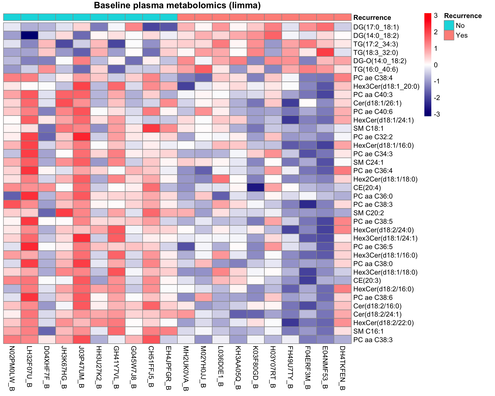
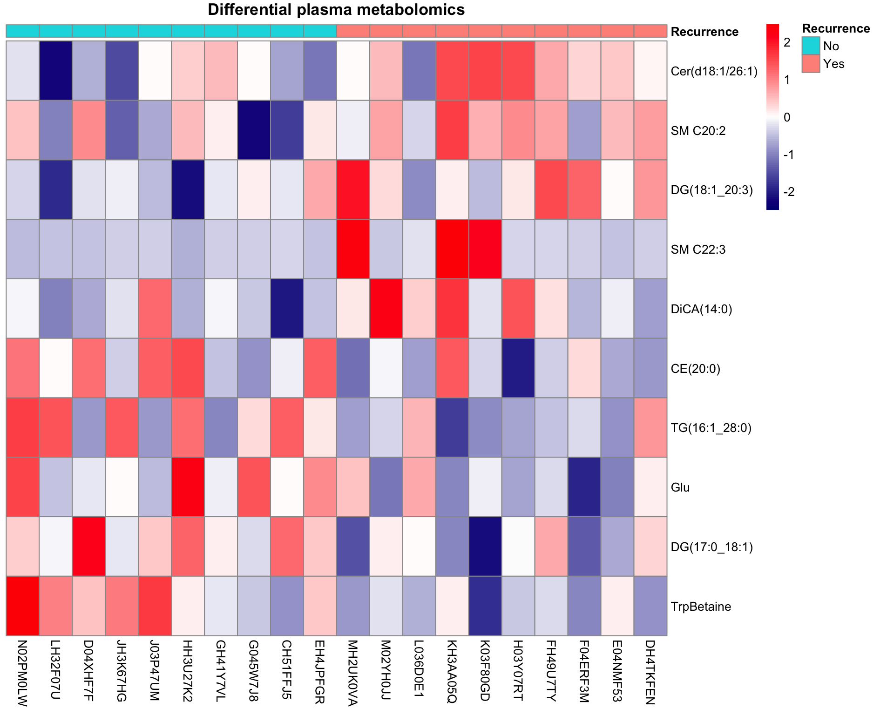
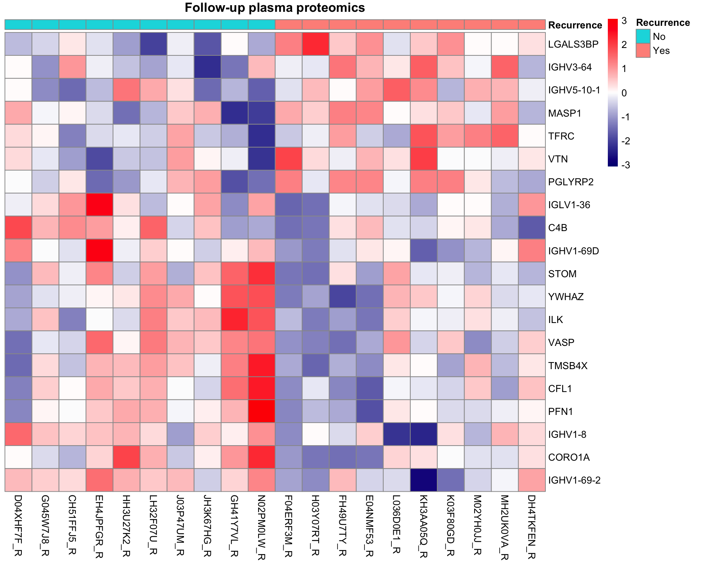

Single-omics analysis: Targeted Metabolomics and DDA Proteomics of Method Development cohort
Qian-Wu Liao
Last updated: 2023-12-06
Checks: 6 1
Knit directory: SMART-CARE_LungCancer/
This reproducible R Markdown analysis was created with workflowr (version 1.7.0). The Checks tab describes the reproducibility checks that were applied when the results were created. The Past versions tab lists the development history.
Great! Since the R Markdown file has been committed to the Git repository, you know the exact version of the code that produced these results.
Great job! The global environment was empty. Objects defined in the global environment can affect the analysis in your R Markdown file in unknown ways. For reproduciblity it’s best to always run the code in an empty environment.
The command set.seed(20230425) was run prior to running
the code in the R Markdown file. Setting a seed ensures that any results
that rely on randomness, e.g. subsampling or permutations, are
reproducible.
Great job! Recording the operating system, R version, and package versions is critical for reproducibility.
Nice! There were no cached chunks for this analysis, so you can be confident that you successfully produced the results during this run.
Using absolute paths to the files within your workflowr project makes it difficult for you and others to run your code on a different machine. Change the absolute path(s) below to the suggested relative path(s) to make your code more reproducible.
| absolute | relative |
|---|---|
| /Users/qianwu/Desktop/SMART-CARE_LungCancer | . |
Great! You are using Git for version control. Tracking code development and connecting the code version to the results is critical for reproducibility.
The results in this page were generated with repository version 7f8311b. See the Past versions tab to see a history of the changes made to the R Markdown and HTML files.
Note that you need to be careful to ensure that all relevant files for
the analysis have been committed to Git prior to generating the results
(you can use wflow_publish or
wflow_git_commit). workflowr only checks the R Markdown
file, but you know if there are other scripts or data files that it
depends on. Below is the status of the Git repository when the results
were generated:
Ignored files:
Ignored: .DS_Store
Ignored: .RData
Ignored: .Rhistory
Ignored: analysis/.DS_Store
Ignored: code/.DS_Store
Ignored: data/.DS_Store
Ignored: output/.DS_Store
Untracked files:
Untracked: analysis/feature_selection.Rmd
Untracked: code/archive/
Untracked: code/dataset_list.R
Untracked: code/workflowr_commands.R
Untracked: data/Discovery/
Untracked: data/MethodDev/
Untracked: data/aliquot_metadata.xlsx
Untracked: data/patient_metadata.xlsx
Untracked: data/sample_metadata.xlsx
Untracked: output/MethodDev/
Untracked: output/SC_meeting/
Note that any generated files, e.g. HTML, png, CSS, etc., are not included in this status report because it is ok for generated content to have uncommitted changes.
These are the previous versions of the repository in which changes were
made to the R Markdown
(analysis/MethodDev_02_soa_targeted_DDA.Rmd) and HTML
(docs/MethodDev_02_soa_targeted_DDA.html) files. If you’ve
configured a remote Git repository (see ?wflow_git_remote),
click on the hyperlinks in the table below to view the files as they
were in that past version.
| File | Version | Author | Date | Message |
|---|---|---|---|---|
| Rmd | a3af65a | LiaoQianWu | 2023-11-24 | Redo single-omics analysis of all method development and discovery datasets |
| Rmd | bba1011 | LiaoQianWu | 2023-11-17 | Rearrange file locations and redo preprocessing of all method development datasets |
Description: Conduct univariate (t-test) and multivariate (PCA) analyses on individual datasets, i.e., Plasma and Tissue Targeted Metabolomics from AG Hell and DDA Proteomics from AG Krijgsveld, to have overview of data and take initial look at data power in terms of predicting patient cancer recurrence. Association between each feature (metabolite or protein level) and cancer recurrence was tested by t-test, which captures significant features that can separate recurrence and non-recurrence patient groups. PCA was performed to view sources of data variance associated with certain metadata variables.
Metadata variables
Patient (n = 20):
Recurrence -> Cancer recurrences, Yes:No = 1:1
Gender -> Male:Female = 13:7
Age -> Diagnosis ages ranging from 56 to 84
Smoking -> Smoker:Ex-smoker:Non-Smoker = 3:14:3
Stage -> Pathological stages, IB:IIA:IIB = 11:8:1
Adjuvant -> Adjuvant chemotherapy, True:False = 13:7
Sample (n = 40):
Condition -> Tissue sample conditions, Tumor:Normal = 1:1
TimePoint -> Plasma sample collection time points, Baseline:2 years
later = 1:1
Load libraries
library('SummarizedExperiment')
library('limma')
library('pheatmap')
library('ggrepel')
library('umap')
library('openxlsx')
library('tidyverse')
# Load user-defined functions
source('./code/misc.R')
# Set plot theme
th <- theme_bw(base_size = 15) +
theme(axis.title = element_text(face = 'bold'),
axis.text = element_text(face = 'bold'),
axis.ticks = element_line(linewidth = 0.8),
legend.text = element_text(size = 15))Display associations between cancer recurrence and the other patient metadata variables to identify potential predictors (or confounders)
# Test associations between metadata variables
# Prepare sample metadata
metaPlasmaVsn <- readRDS('./data/MethodDev/AG_Hell/metaPlasmaVsn.rds')
patientMetadat <- tibble::as_tibble(colData(metaPlasmaVsn)) %>%
dplyr::filter(!duplicated(Patient)) %>%
dplyr::select(Patient, Recurrence, Gender, Age, Smoking, Stage, Adjuvant)
patientRecur <- dplyr::select(patientMetadat, Patient, Recurrence)
patientMetadat <- dplyr::select(patientMetadat, -Recurrence)
testAsso(patientMetadat, patientRecur, cmn_col = 'Patient') %>%
dplyr::select(-Stat) Var1 Var2 pVal pValAdj Test
1 Smoking Recurrence 0.1637321 0.7522934 Chi-square
2 Gender Recurrence 0.3484426 0.7522934 Chi-square
3 Stage Recurrence 0.4513760 0.7522934 Chi-square
4 Age Recurrence 0.7129126 0.8911408 T-test
5 Adjuvant Recurrence 1.0000000 1.0000000 Chi-squarePlasma Metabolomics
Based on PCA result obtained by analyzing whole Plasma Metabolomics dataset that includes Baseline and Follow-up samples, we found that PCA mainly captures source of variation in time points, the unwanted variation. Besides, we attempt to identify biomarkers that can predict whether patients WILL experience cancer recurrence or not. Therefore, we decided to analyze Baseline and Follow-up samples separately.
# Load normalized data
metaPlasmaNorm <- readRDS('./data/MethodDev/AG_Hell/metaPlasmaVsn.rds')
# Manually modify time point information
tmp_metadata <- as.data.frame(colData(metaPlasmaNorm)) %>%
dplyr::mutate(TimePoint = dplyr::case_when(Condition == 'Baseline' ~ 'Baseline',
Condition != 'Baseline' ~ '2 years later'))
colData(metaPlasmaNorm)['TimePoint'] <- tmp_metadata$TimePoint
# Perform analysis
metaPlasmaRes <- doSOA(metaPlasmaNorm, meta_var = 'TimePoint', do_onlyPCA = T)
pcSigAssoRes <- metaPlasmaRes$pcSigAssoRes
pcTab <- metaPlasmaRes$pcTabDisplay significant associations between learned PCs (Var1) and metadata variables (Var2)
# Display PCs of interest
pcSigAssoRes Var1 Var2 pVal pValAdj Stat Test
1 PC2 (16.8%) TimePoint 0.000425 0.017 -3.86 T-testPC2 explains quite some variation in data and separates samples by time points.
ggplot(pcTab, aes(x=TimePoint, y=`PC2 (16.8%)`, col=TimePoint)) +
geom_boxplot(outlier.shape = NA) +
geom_jitter(position = position_jitter(0.3), size = 3, show.legend = F) +
ggpubr::stat_compare_means(method = 't.test', paired = F,
method.args = list(var.equal = T),
show.legend = F, size = 5) +
labs(x = 'Sample collection time point', title = 'Plasma metabolomics', color = 'Time Point') +
thBaseline samples
Display significant associations between learned PCs (Var1) and metadata variables (Var2)
# Subset baseline samples
smpBaseIdx <- which(colData(metaPlasmaNorm)$Condition == 'Baseline')
metaBase <- metaPlasmaNorm[, smpBaseIdx]
# Display significant associations between PCs and metadata variables
metaBaseAssoRes <- doSOA(metaBase, meta_var = c('Recurrence', 'Gender', 'Age',
'Smoking', 'Stage', 'Adjuvant'),
do_onlyPCA = T)
metaBaseAssoRes$pcSigAssoRes Var1 Var2 pVal pValAdj Stat Test
1 PC14 (1.9%) Age 0.00478 0.520 -0.604 Correlation
2 PC20 (0%) Recurrence 0.01260 0.520 -2.770 T-test
3 PC11 (2.7%) Recurrence 0.01300 0.520 2.760 T-test
4 PC15 (1.7%) Recurrence 0.02760 0.707 -2.400 T-test
5 PC4 (7.2%) Gender 0.02950 0.707 2.370 T-test
6 PC12 (2.7%) Adjuvant 0.04630 0.733 2.140 T-test
7 PC13 (2.1%) Stage 0.04700 0.733 3.680 ANOVA
8 PC6 (4.9%) Age 0.04890 0.733 0.446 CorrelationDisplay significant associations between features (Var1) and cancer recurrence (Var2) and observe molecular signatures in input data through heatmap. Note that differentially abundant entities are identified using limma and features in heatmap are ordered by their t-statistics.
# Perform analysis
metaBaseRes <- doSOA(metaBase, meta_var = 'Recurrence', num_PCfeats = 30, use_limma = T)
datMat <- metaBaseRes$data
smpAnno <- metaBaseRes$smpMetadata
featSigAssoRes <- metaBaseRes$featSigAssoRes
featAssoRes <- metaBaseRes$featAssoRes
pcSigAssoRes <- metaBaseRes$pcSigAssoRes
pcTab <- metaBaseRes$pcTab
pcTopFeatTab <- metaBaseRes$pcTopFeatTab
# Display features that can significantly separate recurrence and non-recurrence patients
featSigAssoRes Var1 Var2 pVal pValAdj Stat Test
1 PC aa C38:3 Recurrence 0.00371 0.609 -3.25 T-test (limma)
2 SM C16:1 Recurrence 0.00579 0.609 -3.06 T-test (limma)
3 HexCer(d18:2/22:0) Recurrence 0.00585 0.609 -3.05 T-test (limma)
4 Cer(d18:2/24:1) Recurrence 0.00725 0.609 -2.96 T-test (limma)
5 Cer(d18:2/16:0) Recurrence 0.00744 0.609 -2.95 T-test (limma)
6 DG(17:0_18:1) Recurrence 0.01070 0.609 2.79 T-test (limma)
7 PC ae C38:6 Recurrence 0.01180 0.609 -2.75 T-test (limma)
8 DG(14:0_18:2) Recurrence 0.01260 0.609 2.72 T-test (limma)
9 HexCer(d18:2/16:0) Recurrence 0.01280 0.609 -2.71 T-test (limma)
10 CE(20:3) Recurrence 0.01360 0.609 -2.68 T-test (limma)
11 TG(17:2_34:3) Recurrence 0.01380 0.609 2.68 T-test (limma)
12 Hex3Cer(d18:1/18:0) Recurrence 0.01510 0.609 -2.64 T-test (limma)
13 PC aa C38:0 Recurrence 0.01540 0.609 -2.63 T-test (limma)
14 Hex3Cer(d18:1/16:0) Recurrence 0.01570 0.609 -2.62 T-test (limma)
15 PC ae C36:5 Recurrence 0.01610 0.609 -2.61 T-test (limma)
16 Hex3Cer(d18:1/24:1) Recurrence 0.01730 0.609 -2.58 T-test (limma)
17 TG(18:3_32:0) Recurrence 0.01880 0.609 2.54 T-test (limma)
18 PC ae C38:5 Recurrence 0.01890 0.609 -2.54 T-test (limma)
19 HexCer(d18:2/24:0) Recurrence 0.01890 0.609 -2.54 T-test (limma)
20 SM C20:2 Recurrence 0.01930 0.609 -2.53 T-test (limma)
21 PC ae C38:3 Recurrence 0.02200 0.637 -2.47 T-test (limma)
22 CE(20:4) Recurrence 0.02370 0.637 -2.43 T-test (limma)
23 PC aa C36:0 Recurrence 0.02400 0.637 -2.43 T-test (limma)
24 Hex2Cer(d18:1/18:0) Recurrence 0.02580 0.637 -2.39 T-test (limma)
25 DG-O(14:0_18:2) Recurrence 0.02750 0.637 2.36 T-test (limma)
26 PC ae C36:4 Recurrence 0.02830 0.637 -2.35 T-test (limma)
27 SM C24:1 Recurrence 0.02930 0.637 -2.33 T-test (limma)
28 PC ae C32:2 Recurrence 0.03250 0.637 -2.28 T-test (limma)
29 HexCer(d18:1/16:0) Recurrence 0.03270 0.637 -2.28 T-test (limma)
30 PC ae C34:3 Recurrence 0.03280 0.637 -2.28 T-test (limma)
31 SM C18:1 Recurrence 0.03630 0.637 -2.23 T-test (limma)
32 HexCer(d18:1/24:1) Recurrence 0.04250 0.637 -2.16 T-test (limma)
33 Cer(d18:1/26:1) Recurrence 0.04280 0.637 -2.15 T-test (limma)
34 PC ae C40:6 Recurrence 0.04330 0.637 -2.15 T-test (limma)
35 PC aa C40:3 Recurrence 0.04700 0.637 -2.11 T-test (limma)
36 Hex3Cer(d18:1_20:0) Recurrence 0.04790 0.637 -2.10 T-test (limma)
37 TG(16:0_40:6) Recurrence 0.04970 0.637 2.08 T-test (limma)
38 PC ae C38:4 Recurrence 0.05000 0.637 -2.07 T-test (limma)# Plot molecular signatures in input data
# Order features according to t-statistics
featOrder <- dplyr::arrange(featSigAssoRes, dplyr::desc(Stat))$Var1
# Arrange samples to make same groups in same clusters
smpOrder <- c(which(smpAnno$Recurrence == 'No'),
which(smpAnno$Recurrence == 'Yes'))
# Prepare recurrence table for annotating samples in heatmap
smpRecur <- dplyr::select(smpAnno, Sample, Recurrence) %>%
tibble::column_to_rownames('Sample')
pheatmap(datMat[featOrder, smpOrder],
annotation_col = smpRecur,
color = colorRampPalette(c('navy', 'white', 'red'))(100),
cluster_rows = F, cluster_cols = F, show_rownames = T,
scale = 'row', #row scaling is across columns
main = 'Baseline plasma metabolomics (limma)')
Visualize data of top 6 significant features (ns: p > 0.05, \(*\): p <= 0.05, \(**\): p <= 0.01, \(***\): p <= 0.001)
# Prepare data matrix and metadata including all samples
dat <- metaPlasmaRes$data
anno <- metaPlasmaRes$smpMetadata %>%
dplyr::mutate(TimePoint = dplyr::case_when(TimePoint == 'Baseline' ~ 'Baseline',
TimePoint == '2 years later' ~ 'Follow-up'))
# Prepare significant feature table
num_sigFeats <- 6
gpLevel = c('Yes_Baseline', 'No_Baseline', 'Yes_Follow-up', 'No_Follow-up')
tpCol = c('firebrick', 'grey50') #c(Baseline, Follow-up)
# Extract top significant features and prepare needed information
topSigFeats <- featSigAssoRes[1:num_sigFeats,] %>%
dplyr::pull(Var1)
topSigFeatDat <- tibble::as_tibble(dat[topSigFeats,], rownames = 'Var1') %>%
tidyr::pivot_longer(cols = -'Var1', names_to = 'Sample', values_to = 'Abundance') %>%
dplyr::left_join(anno, by = 'Sample') %>%
dplyr::mutate(Recur_TP = paste0(Recurrence, '_', TimePoint),
Recur_TP = factor(Recur_TP, levels = gpLevel),
Var1 = factor(Var1, levels = topSigFeats))
ggplot(topSigFeatDat, aes(x=Recur_TP, y=Abundance, col=TimePoint, fill=Recurrence)) +
geom_boxplot(alpha = 1, outlier.shape = NA, linewidth = 1) +
geom_jitter(position = position_jitter(0.2), size = 2, show.legend = F) +
ggpubr::stat_compare_means(method = 't.test', paired = F, method.args = list(var.equal = T),
comparisons = list(c('Yes_Baseline', 'No_Baseline'),
c('Yes_Follow-up', 'No_Follow-up')),
label = 'p.signif', tip.length = 0.015, bracket.size = 0.7, size = 4) +
labs(x = 'Recurrence') +
scale_color_manual(values = tpCol, name = 'Time Point') +
scale_fill_manual(values=c('#00BFC4', '#F8766D')) +
facet_wrap(vars(Var1), scales = 'free') +
th + theme(strip.text = element_text(size = 13, face = 'bold'),
axis.text.x = element_text(angle = 45, hjust = 1, vjust = 1))Assess data power by p-value histogram
p <- featAssoRes$pVal
hist(p, xlab = 'P-value', main = 'Baseline Plasma Metabolomics')Display significant associations between PCs (Var1) and cancer recurrence (Var2)
# Display PCs that can significantly separate recurrence and non-recurrence patients
pcSigAssoRes Var1 Var2 pVal pValAdj Stat Test
1 PC20 (0%) Recurrence 0.0126 0.130 -2.77 T-test
2 PC11 (2.7%) Recurrence 0.0130 0.130 2.76 T-test
3 PC15 (1.7%) Recurrence 0.0276 0.184 -2.40 T-testPC11 potentially separates recurrence and non-recurrence patients.
# PC11
# Visualize PCs
ggplot(pcTab, aes(x=Recurrence, y=`PC11 (2.7%)`, col=Recurrence, fill=Recurrence)) +
geom_boxplot(alpha = 0.7, outlier.shape = NA) +
geom_jitter(position = position_jitter(0.3), size = 3, show.legend = F) +
labs(title = 'Baseline plasma metabolomics') +
scale_color_manual(values=c('#00BFC4', '#F8766D')) +
scale_fill_manual(values=c('#00BFC4', '#F8766D')) +
ggpubr::stat_compare_means(method = 't.test', paired = F,
method.args = list(var.equal = T),
show.legend = F, size = 7) +
thPlot molecular signatures captured by PC11 in input data. We took a look at top 20 features with highest loadings and observed metabolite levels of these top features through heatmap. Note that features in heatmap are ordered by their loadings. There is no single feature that can decently hint if patients will suffer cancer recurrence or not, which means each of these top features contributes a bit to explaining variation between recurrence and non-recurrence patients.
# Plot molecular signatures in input data
# Extract top features with highest loadings
topFeats <- pcTopFeatTab$PC11$Feature[1:20]
# Order features by loadings
topFeatsIdx <- sapply(topFeats, function(feat) {which(rownames(datMat) == feat)})
pheatmap::pheatmap(datMat[topFeatsIdx, smpOrder],
annotation_col = smpRecur,
color = colorRampPalette(c('navy', 'white', 'red'))(100),
cluster_rows = F, cluster_cols = F,
scale = 'row', main = 'Baseline plasma metabolomics - PC11')Display top features that build the PC11
# Display top features with highest loadings of PC of interest
pcTopFeatTab$PC11 Feature Loading
1 TrpBetaine 0.3170
2 C16:2 -0.2390
3 TG(16:1_30:1) -0.2240
4 C10 -0.2230
5 DG(21:0_22:6) 0.2110
6 BABA -0.1930
7 DG-O(14:0_18:2) 0.1790
8 CE(22:1) 0.1530
9 TG(16:1_28:0) 0.1400
10 3-IAA -0.1390
11 DG(18:1_18:4) 0.1360
12 PC ae C30:1 0.1250
13 3-Met-His -0.1210
14 Anserine 0.1200
15 DG-O(16:0_18:1) -0.1150
16 DCA 0.0999
17 DG(16:0_20:0) 0.0957
18 DG(18:1_20:2) 0.0940
19 TG(16:0_28:1) 0.0879
20 C10:1 0.0848
21 DG(14:1_18:1) 0.0825
22 DG(14:1_20:2) -0.0825
23 CE(22:2) 0.0824
24 TG(16:1_32:1) -0.0805
25 p-Cresol-SO4 -0.0783
26 Histamine 0.0772
27 lysoPC a C18:2 0.0768
28 DG(18:3_20:2) -0.0765
29 TG(18:1_26:0) 0.0744
30 DG(16:0_16:0) 0.0732Another PC that significantly separates recurrence and non-recurrence patients
# PC15
# Visualize PCs
ggplot(pcTab, aes(x=Recurrence, y=`PC15 (1.7%)`, col=Recurrence, fill=Recurrence)) +
geom_boxplot(alpha = 0.7, outlier.shape = NA) +
geom_jitter(position = position_jitter(0.3), size = 3, show.legend = F) +
labs(title = 'Baseline plasma metabolomics') +
scale_color_manual(values=c('#00BFC4', '#F8766D')) +
scale_fill_manual(values=c('#00BFC4', '#F8766D')) +
ggpubr::stat_compare_means(method = 't.test', paired = F,
method.args = list(var.equal = T),
show.legend = F, size = 7) +
th# Display top features with highest loadings of PC of interest
pcTopFeatTab$PC15 Feature Loading
1 PC ae C38:1 -0.2650
2 Cer(d18:0/26:1(OH)) 0.2060
3 DG-O(14:0_18:2) -0.2030
4 DG(14:1_20:2) 0.1890
5 p-Cresol-SO4 0.1710
6 TG(18:0_30:1) 0.1410
7 ProBetaine -0.1250
8 BABA -0.1240
9 DiCA(12:0) -0.1220
10 Cer(d18:0/18:0(OH)) 0.1200
11 C16:2 -0.1200
12 GLCAS -0.1150
13 CE(22:2) 0.1110
14 DG(18:1_20:2) -0.1070
15 DG(18:1_18:4) 0.1060
16 C8 0.1060
17 TG(20:1_26:1) 0.1050
18 DG(14:0_18:2) -0.1040
19 GUDCA -0.1010
20 3-IPA -0.0972
21 CE(22:1) 0.0961
22 Cortisol 0.0944
23 DG(18:1_18:3) -0.0915
24 PC ae C30:1 -0.0911
25 HCys -0.0911
26 Cer(d18:0/20:0) -0.0881
27 GDCA -0.0873
28 TG(17:0_32:1) -0.0845
29 Putrescine 0.0841
30 DG(18:2_20:0) 0.0815Follow-up samples
Display significant associations between learned PCs (Var1) and metadata variables (Var2)
# Subset follow-up samples
smpFoloIdx <- which(colData(metaPlasmaNorm)$Condition != 'Baseline')
metaFolo <- metaPlasmaNorm[, smpFoloIdx]
# Display significant associations between PCs and metadata variables
metaFoloAssoRes <- doSOA(metaFolo, meta_var = c('Recurrence', 'Gender', 'Adjuvant'),
do_onlyPCA = T)
metaFoloAssoRes$pcSigAssoRes Var1 Var2 pVal pValAdj Stat Test
1 PC8 (3.7%) Gender 0.00715 0.429 -3.03 T-testDisplay significant associations between features (Var1) and cancer recurrence (Var2) and observe molecular signatures in input data through heatmap. Note that features in heatmap are ordered by their t-statistics.
# Perform analysis
metaFoloRes <- doSOA(metaFolo, meta_var = 'Recurrence', num_PCfeats = 30, use_limma = T)
datMat <- metaFoloRes$data
smpAnno <- metaFoloRes$smpMetadata
featSigAssoRes <- metaFoloRes$featSigAssoRes
featAssoRes <- metaFoloRes$featAssoRes
pcSigAssoRes <- metaFoloRes$pcSigAssoRes
# Display features that can significantly separate recurrence and non-recurrence patients
featSigAssoRes Var1 Var2 pVal pValAdj Stat Test
1 CE(18:0) Recurrence 0.00554 0.823 -3.08 T-test (limma)
2 CE(18:3) Recurrence 0.00602 0.823 -3.05 T-test (limma)
3 GABA Recurrence 0.00732 0.823 -2.96 T-test (limma)
4 CE(16:0) Recurrence 0.00829 0.823 -2.91 T-test (limma)
5 Putrescine Recurrence 0.00835 0.823 -2.90 T-test (limma)
6 C18:1-OH Recurrence 0.01540 0.823 2.63 T-test (limma)
7 Asp Recurrence 0.01650 0.823 -2.60 T-test (limma)
8 lysoPC a C18:0 Recurrence 0.01940 0.823 -2.53 T-test (limma)
9 Lac Recurrence 0.02130 0.823 -2.48 T-test (limma)
10 CE(20:3) Recurrence 0.02520 0.823 -2.41 T-test (limma)
11 CE(18:1) Recurrence 0.02640 0.823 -2.38 T-test (limma)
12 CE(14:1) Recurrence 0.02690 0.823 -2.37 T-test (limma)
13 CE(17:0) Recurrence 0.02950 0.823 -2.33 T-test (limma)
14 DG(18:1_20:3) Recurrence 0.03050 0.823 2.32 T-test (limma)
15 TG(18:2_38:5) Recurrence 0.03230 0.823 2.29 T-test (limma)
16 Taurine Recurrence 0.03330 0.823 -2.27 T-test (limma)
17 DiCA(14:0) Recurrence 0.03540 0.823 2.24 T-test (limma)
18 TG(22:4_34:2) Recurrence 0.03550 0.823 2.24 T-test (limma)
19 SM C22:3 Recurrence 0.03610 0.823 2.24 T-test (limma)
20 C18:2 Recurrence 0.04000 0.823 -2.19 T-test (limma)
21 t4-OH-Pro Recurrence 0.04050 0.823 -2.18 T-test (limma)
22 CE(14:0) Recurrence 0.04240 0.823 -2.16 T-test (limma)
23 PC ae C40:1 Recurrence 0.04300 0.823 -2.15 T-test (limma)
24 TG(22:5_34:2) Recurrence 0.04580 0.823 2.12 T-test (limma)
25 CE(20:4) Recurrence 0.04640 0.823 -2.11 T-test (limma)
26 TG(20:0_32:3) Recurrence 0.04790 0.823 2.10 T-test (limma)
27 DG(18:3_18:3) Recurrence 0.04800 0.823 2.10 T-test (limma)
28 Orn Recurrence 0.04800 0.823 -2.10 T-test (limma)
29 CE(16:1) Recurrence 0.04830 0.823 -2.09 T-test (limma)
30 C18 Recurrence 0.04880 0.823 -2.09 T-test (limma)# Plot molecular signatures in input data
# Order features according to t-statistics
featOrder <- dplyr::arrange(featSigAssoRes, dplyr::desc(Stat))$Var1
# Arrange samples to make same groups in same clusters
smpOrder <- c(which(smpAnno$Recurrence == 'No'),
which(smpAnno$Recurrence == 'Yes'))
# Prepare recurrence table for annotating samples in heatmap
smpRecur <- dplyr::select(smpAnno, Sample, Recurrence) %>%
tibble::column_to_rownames('Sample')
pheatmap(datMat[featOrder, smpOrder],
annotation_col = smpRecur,
color = colorRampPalette(c('navy', 'white', 'red'))(100),
cluster_rows = F, cluster_cols = F, show_rownames = T,
scale = 'row', main = 'Follow-up plasma metabolomics')Visualize data of top 6 significant features (ns: p > 0.05, \(*\): p <= 0.05, \(**\): p <= 0.01, \(***\): p <= 0.001)
# Prepare data matrix and metadata including all samples
dat <- metaPlasmaRes$data
anno <- metaPlasmaRes$smpMetadata %>%
dplyr::mutate(TimePoint = dplyr::case_when(TimePoint == 'Baseline' ~ 'Baseline',
TimePoint == '2 years later' ~ 'Follow-up'))
# Prepare significant feature table
num_sigFeats <- 6
gpLevel = c('Yes_Follow-up', 'No_Follow-up', 'Yes_Baseline', 'No_Baseline')
tpCol = c('grey50', 'firebrick') #c(Baseline, Follow-up)
# Extract top significant features and prepare needed information
topSigFeats <- featSigAssoRes[1:num_sigFeats,] %>%
dplyr::pull(Var1)
topSigFeatDat <- tibble::as_tibble(dat[topSigFeats,], rownames = 'Var1') %>%
tidyr::pivot_longer(cols = -'Var1', names_to = 'Sample', values_to = 'Abundance') %>%
dplyr::left_join(anno, by = 'Sample') %>%
dplyr::mutate(Recur_TP = paste0(Recurrence, '_', TimePoint),
Recur_TP = factor(Recur_TP, levels = gpLevel),
Var1 = factor(Var1, levels = topSigFeats))
ggplot(topSigFeatDat, aes(x=Recur_TP, y=Abundance, col=TimePoint, fill=Recurrence)) +
geom_boxplot(alpha = 1, outlier.shape = NA, linewidth = 1) +
geom_jitter(position = position_jitter(0.2), size = 2, show.legend = F) +
ggpubr::stat_compare_means(method = 't.test', paired = F, method.args = list(var.equal = T),
comparisons = list(c('Yes_Follow-up', 'No_Follow-up'),
c('Yes_Baseline', 'No_Baseline')),
label = 'p.signif', tip.length = 0.015, bracket.size = 0.7, size = 4) +
labs(x = 'Recurrence') +
scale_color_manual(values = tpCol, name = 'Time Point') +
scale_fill_manual(values=c('#00BFC4', '#F8766D')) +
facet_wrap(vars(Var1), scales = 'free') +
th + theme(strip.text = element_text(size = 13, face = 'bold'),
axis.text.x = element_text(angle = 45, hjust = 1, vjust = 1))Assess data power by p-value histogram
p <- featAssoRes$pVal
hist(p, xlab = 'P-value', main = 'Follow-up Plasma Metabolomics')There is no significant association between PCs (Var1) and cancer recurrence (Var2).
# Display PCs that can significantly separate recurrence and non-recurrence patients
pcSigAssoRes[1] Var1 Var2 pVal pValAdj Stat Test
<0 rows> (or 0-length row.names)Changes in time course
Differences between Follow-up and Baseline samples (Follow-up matrix
- baseline matrix):
Display significant associations between features (Var1) and cancer recurrence (Var2) and observe molecular signatures in input data through heatmap. Note that features in heatmap are ordered by their t-statistics.
# Subset baseline samples
smpBaseIdx <- which(colData(metaPlasmaNorm)$Condition == 'Baseline')
metaBase <- metaPlasmaNorm[, smpBaseIdx]
# Subset follow-up samples
smpFoloIdx <- which(colData(metaPlasmaNorm)$Condition != 'Baseline')
metaFolo <- metaPlasmaNorm[, smpFoloIdx]
# Modify sample names for matching two datasets
colnames(metaBase) <- stringr::str_remove(colnames(metaBase), '_B')
colnames(metaFolo) <- stringr::str_remove(colnames(metaFolo), '_R')
# Retrieve data matrix
metaBaseMat <- SummarizedExperiment::assay(metaBase)
metaFoloMat <- SummarizedExperiment::assay(metaFolo)
# Subtract follow-up matrix by baseline matrix
if (identical(colnames(metaBaseMat), colnames(metaFoloMat)) &
identical(rownames(metaBaseMat), rownames(metaFoloMat))) {
metaDiffMat <- metaFoloMat - metaBaseMat
} else {
print('Align samples or features first.')
}
# Retrieve samples metadata for creating SE object
colAnno <- as.data.frame(colData(metaBase))
metaDiff <- SummarizedExperiment(assays = metaDiffMat, colData = colAnno)
# Perform analysis
metaPlasmaDiffRes <- doSOA(metaDiff, meta_var = 'Recurrence', num_PCfeats = 30, use_limma = T)
datMat <- metaPlasmaDiffRes$data
smpAnno <- metaPlasmaDiffRes$smpMetadata
featSigAssoRes <- metaPlasmaDiffRes$featSigAssoRes
featAssoRes <- metaPlasmaDiffRes$featAssoRes
pcSigAssoRes <- metaPlasmaDiffRes$pcSigAssoRes
pcTab <- metaPlasmaDiffRes$pcTab
pcTopFeatTab <- metaPlasmaDiffRes$pcTopFeatTab
# Display features that can significantly separate recurrence and non-recurrence patients
featSigAssoRes Var1 Var2 pVal pValAdj Stat Test
1 TrpBetaine Recurrence 0.00288 0.998 -3.37 T-test (limma)
2 DG(17:0_18:1) Recurrence 0.00925 0.998 -2.86 T-test (limma)
3 Cer(d18:1/26:1) Recurrence 0.01180 0.998 2.75 T-test (limma)
4 Glu Recurrence 0.01910 0.998 -2.54 T-test (limma)
5 TG(16:1_28:0) Recurrence 0.01940 0.998 -2.53 T-test (limma)
6 SM C20:2 Recurrence 0.02410 0.998 2.43 T-test (limma)
7 DG(18:1_20:3) Recurrence 0.02780 0.998 2.36 T-test (limma)
8 SM C22:3 Recurrence 0.03180 0.998 2.30 T-test (limma)
9 CE(20:0) Recurrence 0.03260 0.998 -2.29 T-test (limma)
10 DiCA(14:0) Recurrence 0.03990 0.998 2.19 T-test (limma)# Plot molecular signatures in input data
# Order features according to t-statistics
featOrder <- dplyr::arrange(featSigAssoRes, dplyr::desc(Stat))$Var1
# Arrange samples to make same groups in same clusters
smpOrder <- c(which(smpAnno$Recurrence == 'No'),
which(smpAnno$Recurrence == 'Yes'))
# Prepare recurrence table for annotating samples in heatmap
smpRecur <- dplyr::select(smpAnno, Sample, Recurrence) %>%
tibble::column_to_rownames('Sample')
pheatmap(datMat[featOrder, smpOrder],
annotation_col = smpRecur,
color = colorRampPalette(c('navy', 'white', 'red'))(100),
cluster_rows = F, cluster_cols = F, show_rownames = T,
scale = 'row', main = 'Differential plasma metabolomics')
Visualize data of top 6 significant features
# Visualize data of top 6 significant features
topSigFeats <- featSigAssoRes$Var1[1:6]
topSigFeatData <- tibble::as_tibble(datMat[topSigFeats,], rownames = 'Feature') %>%
tidyr::pivot_longer(cols = -'Feature',
names_to = 'Sample', values_to = 'Abundance') %>%
dplyr::mutate(Feature = factor(Feature, levels = topSigFeats)) %>%
dplyr::left_join(smpAnno, by = 'Sample')
ggplot(topSigFeatData, aes(x=Recurrence, y=Abundance, col=Recurrence, fill=Recurrence)) +
geom_boxplot(alpha = 0.7, outlier.shape = NA) +
geom_jitter(position = position_jitter(0.3), size = 3, show.legend = F) +
scale_color_manual(values=c('#00BFC4', '#F8766D')) +
scale_fill_manual(values=c('#00BFC4', '#F8766D')) +
facet_wrap(vars(Feature), scales = 'free') +
ggpubr::stat_compare_means(method = 't.test', paired = F,
method.args = list(var.equal = T),
show.legend = F) +
th + theme(strip.text = element_text(size = 13, face = 'bold'))Display significant associations between PCs (Var1) and cancer recurrence (Var2)
# Display PCs that can significantly separate recurrence and non-recurrence patients
pcSigAssoRes Var1 Var2 pVal pValAdj Stat Test
1 PC17 (1.8%) Recurrence 0.00639 0.128 -3.08 T-testVisualize significant PCs and display their top features with greatest absolute loadings
# Visualize PCs
ggplot(pcTab, aes(x=Recurrence, y=`PC17 (1.8%)`, col=Recurrence, fill=Recurrence)) +
geom_boxplot(alpha = 0.7, outlier.shape = NA) +
geom_jitter(position = position_jitter(0.3), size = 3, show.legend = F) +
labs(title = 'Differential plasma metabolomics') +
scale_color_manual(values=c('#00BFC4', '#F8766D')) +
scale_fill_manual(values=c('#00BFC4', '#F8766D')) +
ggpubr::stat_compare_means(method = 't.test', paired = F, size = 5,
method.args = list(var.equal = T),
show.legend = F) +
th# Display top features with highest loadings of PC of interest
pcTopFeatTab$PC17 Feature Loading
1 TrpBetaine 0.2650
2 DG-O(14:0_18:2) 0.1920
3 Cer(d18:0/26:1(OH)) -0.1810
4 TMAO 0.1600
5 DG(14:0_18:2) 0.1580
6 C6 (C4:1-DC) -0.1470
7 DG(18:3_18:3) -0.1440
8 C3:1 -0.1390
9 3-IAA -0.1250
10 GUDCA -0.1120
11 TG(18:1_26:0) -0.1120
12 DG(14:1_20:2) 0.1110
13 DG(18:2_18:4) -0.1090
14 3-Met-His 0.1080
15 TG(20:1_26:1) -0.1050
16 TG(18:0_30:1) -0.0998
17 PC ae C30:0 0.0992
18 DCA 0.0988
19 DG(16:0_20:0) -0.0970
20 3-IPA 0.0967
21 SM C22:3 -0.0958
22 Spermidine -0.0902
23 Xanthine 0.0901
24 Cer(d18:0/18:0(OH)) -0.0896
25 PC aa C30:0 0.0890
26 AA -0.0889
27 Arg 0.0886
28 C16 -0.0824
29 DG(16:1_18:0) -0.0808
30 TG(18:1_28:1) -0.0806Tissue Metabolomics
Based on PCA result obtained by analyzing whole Tissue Metabolomics dataset that includes Tumor and Normal samples, we found that PCA mainly captures source of variation in tissue conditions, which is not of direct interest. In addition, recurrence-related significant PCs do not work that well, perhaps because Tumor and Normal samples are noise to each other. Therefore, we decided to analyze Tumor and Normal samples separately.
# Load normalized data
metaTissueNorm <- readRDS('./data/MethodDev/AG_Hell/metaTissueVsn.rds')
# Perform analysis
metaTissueRes <- doSOA(metaTissueNorm, meta_var = c('Recurrence', 'Condition'), do_onlyPCA = T)
pcSigAssoRes <- metaTissueRes$pcSigAssoRes
pcTab <- metaTissueRes$pcTabDisplay significant associations between learned PCs (Var1) and metadata variables (Var2). Note that each patient has two samples that have same recurrence annotations, so association test results may have additive effects.
# Display PCs of interest
pcSigAssoRes Var1 Var2 pVal pValAdj Stat Test
1 PC2 (18.2%) Condition 6.25e-15 5.00e-13 -12.40 T-test
2 PC40 (0%) Condition 2.64e-02 8.15e-01 -2.31 T-test
3 PC14 (1.4%) Recurrence 3.06e-02 8.15e-01 -2.25 T-test
4 PC15 (1.3%) Recurrence 4.86e-02 9.53e-01 -2.04 T-testPC2 explains quite some variation in data and separates samples by tissue conditions.
ggplot(pcTab, aes(x=Condition, y=`PC2 (18.2%)`, col=Condition, fill=Condition)) +
geom_boxplot(alpha = 0.7, outlier.shape = NA) +
geom_jitter(position = position_jitter(0.3), size = 3, show.legend = F) +
scale_color_brewer(palette = 'Dark2') +
scale_fill_brewer(palette = 'Dark2') +
labs(title = 'Tissue metabolomics') +
thVisualize recurrence-related significant PCs
ggplot(pcTab, aes(x=`PC14 (1.4%)`, y=`PC15 (1.3%)`, col=Recurrence, group=Patient)) +
geom_point(size = 3) +
labs(title = 'Tissue metabolomics') +
scale_color_manual(values=c('#00BFC4', '#F8766D')) +
geom_line(col = 'grey50', linetype = 'dashed') +
thTumor Samples
Display significant associations between learned PCs (Var1) and metadata variables (Var2)
# Subset tumor samples
smpTumorIdx <- which(colData(metaTissueNorm)$Condition == 'Tumor')
metaTumor <- metaTissueNorm[, smpTumorIdx]
# Display significant associations between PCs and metadata variables
metaTumorAssoRes <- doSOA(metaTumor, meta_var = c('Recurrence', 'Gender', 'Age',
'Smoking', 'Stage', 'Adjuvant', 'TumorPurity'),
do_onlyPCA = T)
metaTumorAssoRes$pcSigAssoRes Var1 Var2 pVal pValAdj Stat Test
1 PC16 (1.4%) Recurrence 0.00366 0.512 3.340 T-test
2 PC13 (1.9%) TumorPurity 0.01150 0.633 0.553 Correlation
3 PC6 (4.7%) Adjuvant 0.01730 0.633 -2.620 T-test
4 PC5 (5.1%) Age 0.02020 0.633 -0.515 Correlation
5 PC1 (41.9%) Stage 0.02740 0.633 4.480 ANOVA
6 PC14 (1.7%) Smoking 0.02800 0.633 4.440 ANOVA
7 PC17 (1.3%) Gender 0.03160 0.633 2.330 T-test
8 PC20 (0%) Age 0.03700 0.648 -0.469 Correlation
9 PC17 (1.3%) Age 0.04860 0.756 -0.446 CorrelationDisplay significant associations between features (Var1) and cancer recurrence (Var2) and observe molecular signatures in input data through heatmap. Note that features in heatmap are ordered by their t-statistics.
# Perform analysis
metaTumorRes <- doSOA(metaTumor, meta_var = 'Recurrence', num_PCfeats = 30, use_limma = T)
datMat <- metaTumorRes$data
smpAnno <- metaTumorRes$smpMetadata
featSigAssoRes <- metaTumorRes$featSigAssoRes
featAssoRes <- metaTumorRes$featAssoRes
pcSigAssoRes <- metaTumorRes$pcSigAssoRes
pcTab <- metaTumorRes$pcTab
pcTopFeatTab <- metaTumorRes$pcTopFeatTab
# Display features that can significantly separate recurrence and non-recurrence patients
featSigAssoRes Var1 Var2 pVal pValAdj Stat Test
1 C10:2 Recurrence 0.0202 0.996 2.50 T-test (limma)
2 PC aa C36:6 Recurrence 0.0268 0.996 2.37 T-test (limma)
3 Trigonelline Recurrence 0.0285 0.996 2.34 T-test (limma)
4 DG(16:0_20:0) Recurrence 0.0330 0.996 2.27 T-test (limma)
5 DG(22:1_22:2) Recurrence 0.0347 0.996 2.25 T-test (limma)
6 TG(20:2_34:4) Recurrence 0.0436 0.996 -2.14 T-test (limma)
7 FA(20:2) Recurrence 0.0476 0.996 2.10 T-test (limma)# Plot molecular signatures in input data
# Order features according to t-statistics
featOrder <- dplyr::arrange(featSigAssoRes, dplyr::desc(Stat))$Var1
# Arrange samples to make same groups in same clusters
smpOrder <- c(which(smpAnno$Recurrence == 'No'),
which(smpAnno$Recurrence == 'Yes'))
# Prepare recurrence table for annotating samples in heatmap
smpRecur <- dplyr::select(smpAnno, Sample, Recurrence) %>%
tibble::column_to_rownames('Sample')
pheatmap(datMat[featOrder, smpOrder],
annotation_col = smpRecur,
color = colorRampPalette(c('navy', 'white', 'red'))(100),
cluster_rows = F, cluster_cols = F, show_rownames = T,
fontsize = 18, fontsize_col = 14,
scale = 'row', main = 'Tumor tissue metabolomics')Visualize data of top 6 significant features (ns: p > 0.05, \(*\): p <= 0.05, \(**\): p <= 0.01, \(***\): p <= 0.001)
# Prepare data matrix and metadata including both Tumor and Normal samples
datMat <- metaTissueRes$data
smpAnnoTab <- metaTissueRes$smpMetadata
# Prepare significant feature table
num_sigFeats <- 6
gpLevel = c('Yes_Tumor', 'No_Tumor', 'Yes_Normal', 'No_Normal')
condiCol = c('grey50', 'firebrick') #c(Normal, Tumor)
# Extract top significant features and prepare needed information
topSigFeats <- featSigAssoRes[1:num_sigFeats,] %>%
dplyr::pull(Var1)
topSigFeatDat <- tibble::as_tibble(datMat[topSigFeats,], rownames = 'Var1') %>%
tidyr::pivot_longer(cols = -'Var1', names_to = 'Sample', values_to = 'Abundance') %>%
dplyr::left_join(smpAnnoTab, by = 'Sample') %>%
dplyr::mutate(Recur_Condi = paste0(Recurrence, '_', Condition),
Recur_Condi = factor(Recur_Condi, levels = gpLevel),
Var1 = factor(Var1, levels = topSigFeats))
ggplot(topSigFeatDat, aes(x=Recur_Condi, y=Abundance, col=Condition, fill=Recurrence)) +
geom_boxplot(alpha = 1, outlier.shape = NA, linewidth = 1) +
geom_jitter(position = position_jitter(0.2), size = 2, show.legend = F) +
ggpubr::stat_compare_means(method = 't.test', paired = F, method.args = list(var.equal = T),
comparisons = list(c('Yes_Tumor', 'No_Tumor'), c('Yes_Normal', 'No_Normal')),
label = 'p.signif', tip.length = 0.015, bracket.size = 0.7, size = 4) +
labs(x = 'Recurrence') +
scale_color_manual(values = condiCol) +
scale_fill_manual(values=c('#00BFC4', '#F8766D')) +
facet_wrap(vars(Var1), scales = 'free') +
th + theme(strip.text = element_text(size = 13, face = 'bold'),
axis.text.x = element_text(angle = 45, hjust = 1, vjust = 1))Assess data power by p-value histogram
p <- featAssoRes$pVal
hist(p, xlab = 'P-value', main = 'Tumor Tissue Metabolomics')
Display significant associations between PCs (Var1) and cancer recurrence (Var2)
# Display PCs that can significantly separate recurrence and non-recurrence patients
pcSigAssoRes Var1 Var2 pVal pValAdj Stat Test
1 PC16 (1.4%) Recurrence 0.00366 0.0732 3.34 T-testVisualize significant PCs and display their top features with greatest absolute loadings
# Visualize PCs
ggplot(pcTab, aes(x=Recurrence, y=`PC16 (1.4%)`, col=Recurrence, fill=Recurrence)) +
geom_boxplot(alpha = 0.7, outlier.shape = NA) +
geom_jitter(position = position_jitter(0.3), size = 3, show.legend = F) +
labs(title = 'Tumor tissue metabolomics') +
scale_color_manual(values=c('#00BFC4', '#F8766D')) +
scale_fill_manual(values=c('#00BFC4', '#F8766D')) +
ggpubr::stat_compare_means(method = 't.test', paired = F,
method.args = list(var.equal = T),
show.legend = F, size = 7, hjust = 0) +
th# Display top features with highest loadings of PC of interest
pcTopFeatTab$PC16 Feature Loading
1 C5-DC (C6-OH) 0.1760
2 C8 -0.1710
3 DG(14:0_18:2) 0.1460
4 TG(22:4_32:2) -0.1370
5 H1 -0.1360
6 DG-O(14:0_18:2) 0.1310
7 DG(18:1_18:4) 0.1310
8 PheAlaBetaine -0.1290
9 Ind-SO4 -0.1270
10 PC aa C38:1 0.1240
11 TG(17:1_32:1) -0.1230
12 C3 -0.1070
13 TG(16:1_32:0) 0.1040
14 Sarcosine 0.1030
15 TG(20:2_34:4) -0.1030
16 Cer(d16:1/18:0) 0.1030
17 DG(18:3_20:2) -0.0982
18 Cystine -0.0936
19 Trigonelline 0.0926
20 PC aa C36:6 0.0912
21 PC ae C38:1 0.0909
22 EPA 0.0907
23 C10:2 0.0896
24 DG(18:2_20:4) -0.0896
25 TG(22:2_32:4) -0.0889
26 DG(18:3_18:3) -0.0886
27 TG(22:3_30:2) 0.0880
28 Met-SO -0.0863
29 Cer(d18:1/18:0(OH)) -0.0852
30 C6:1 0.0848Normal samples
Display significant associations between learned PCs (Var1) and metadata variables (Var2)
# Subset normal samples
smpNormalIdx <- which(colData(metaTissueNorm)$Condition == 'Normal')
metaNormal <- metaTissueNorm[, smpNormalIdx]
# Display significant associations between PCs and metadata variables
metaNormalAssoRes <- doSOA(metaNormal, meta_var = c('Recurrence', 'Gender', 'Age',
'Smoking', 'Stage', 'Adjuvant'),
do_onlyPCA = T)
metaNormalAssoRes$pcSigAssoRes Var1 Var2 pVal pValAdj Stat Test
1 PC10 (2.8%) Smoking 0.0040 0.480 7.78 ANOVA
2 PC5 (4.7%) Stage 0.0157 0.792 5.36 ANOVA
3 PC17 (1.4%) Smoking 0.0232 0.792 4.73 ANOVA
4 PC6 (3.8%) Recurrence 0.0264 0.792 -2.42 T-test
5 PC17 (1.4%) Recurrence 0.0489 0.886 -2.11 T-test
6 PC9 (2.8%) Recurrence 0.0493 0.886 -2.11 T-testDisplay significant associations between features (Var1) and cancer recurrence (Var2) and observe molecular signatures in input data through heatmap. Note that features in heatmap are ordered by their t-statistics.
# Perform analysis
metaNormalRes <- doSOA(metaNormal, meta_var = 'Recurrence', num_PCfeats = 30, use_limma = T)
datMat <- metaNormalRes$data
smpAnno <- metaNormalRes$smpMetadata
featSigAssoRes <- metaNormalRes$featSigAssoRes
featAssoRes <- metaNormalRes$featAssoRes
pcSigAssoRes <- metaNormalRes$pcSigAssoRes
pcTab <- metaNormalRes$pcTab
pcTopFeatTab <- metaNormalRes$pcTopFeatTab
# Display features that can significantly separate recurrence and non-recurrence patients
featSigAssoRes Var1 Var2 pVal pValAdj Stat Test
1 CE(22:1) Recurrence 0.0189 0.998 2.53 T-test (limma)
2 Cer(d18:0/26:1(OH)) Recurrence 0.0220 0.998 2.46 T-test (limma)
3 TG(16:0_38:7) Recurrence 0.0448 0.998 -2.12 T-test (limma)
4 Cortisol Recurrence 0.0448 0.998 2.12 T-test (limma)# Plot molecular signatures in input data
# Order features according to t-statistics
featOrder <- dplyr::arrange(featSigAssoRes, dplyr::desc(Stat))$Var1
# Arrange samples to make same groups in same clusters
smpOrder <- c(which(smpAnno$Recurrence == 'No'),
which(smpAnno$Recurrence == 'Yes'))
# Prepare recurrence table for annotating samples in heatmap
smpRecur <- dplyr::select(smpAnno, Sample, Recurrence) %>%
tibble::column_to_rownames('Sample')
pheatmap(datMat[featOrder, smpOrder],
annotation_col = smpRecur,
color = colorRampPalette(c('navy', 'white', 'red'))(100),
cluster_rows = F, cluster_cols = F, show_rownames = T,
scale = 'row', main = 'Normal tissue metabolomics')Visualize data of those 4 significant features (ns: p > 0.05, \(*\): p <= 0.05, \(**\): p <= 0.01, \(***\): p <= 0.001)
# Prepare data matrix and metadata including both Tumor and Normal samples
datMat <- metaTissueRes$data
smpAnnoTab <- metaTissueRes$smpMetadata
# Prepare significant feature table
num_sigFeats <- 4
gpLevel = c('Yes_Normal', 'No_Normal', 'Yes_Tumor', 'No_Tumor')
condiCol = c('firebrick', 'grey50') #c(Normal, Tumor)
# Extract top significant features and prepare needed information
topSigFeats <- featSigAssoRes[1:num_sigFeats,] %>%
dplyr::pull(Var1)
topSigFeatDat <- tibble::as_tibble(datMat[topSigFeats,], rownames = 'Var1') %>%
tidyr::pivot_longer(cols = -'Var1', names_to = 'Sample', values_to = 'Abundance') %>%
dplyr::left_join(smpAnnoTab, by = 'Sample') %>%
dplyr::mutate(Recur_Condi = paste0(Recurrence, '_', Condition),
Recur_Condi = factor(Recur_Condi, levels = gpLevel),
Var1 = factor(Var1, levels = topSigFeats))
ggplot(topSigFeatDat, aes(x=Recur_Condi, y=Abundance, col=Condition, fill=Recurrence)) +
geom_boxplot(alpha = 1, outlier.shape = NA, linewidth = 1) +
geom_jitter(position = position_jitter(0.2), size = 2, show.legend = F) +
ggpubr::stat_compare_means(method = 't.test', paired = F, method.args = list(var.equal = T),
comparisons = list(c('Yes_Normal', 'No_Normal'), c('Yes_Tumor', 'No_Tumor')),
label = 'p.signif', tip.length = 0.015, bracket.size = 0.7, size = 4) +
labs(x = 'Recurrence') +
scale_color_manual(values = condiCol) +
scale_fill_manual(values=c('#00BFC4', '#F8766D')) +
facet_wrap(vars(Var1), scales = 'free') +
th + theme(strip.text = element_text(size = 13, face = 'bold'),
axis.text.x = element_text(angle = 45, hjust = 1, vjust = 1))
Assess data power by p-value histogram
p <- featAssoRes$pVal
hist(p, xlab = 'P-value', main = 'Normal Tissue Metabolomics')Display significant associations between PCs (Var1) and cancer recurrence (Var2)
# Display PCs that can significantly separate recurrence and non-recurrence patients
pcSigAssoRes Var1 Var2 pVal pValAdj Stat Test
1 PC6 (3.8%) Recurrence 0.0264 0.329 -2.42 T-test
2 PC17 (1.4%) Recurrence 0.0489 0.329 -2.11 T-test
3 PC9 (2.8%) Recurrence 0.0493 0.329 -2.11 T-testVisualize significant PCs and display their top features with greatest absolute loadings
# PC6
# Visualize PCs
ggplot(pcTab, aes(x=Recurrence, y=`PC6 (3.8%)`, col=Recurrence, fill=Recurrence)) +
geom_boxplot(alpha = 0.7, outlier.shape = NA) +
geom_jitter(position = position_jitter(0.3), size = 3, show.legend = F) +
labs(title = 'Normal tissue metabolomics') +
scale_color_manual(values=c('#00BFC4', '#F8766D')) +
scale_fill_manual(values=c('#00BFC4', '#F8766D')) +
ggpubr::stat_compare_means(method = 't.test', paired = F, size = 5,
method.args = list(var.equal = T),
show.legend = F) +
th# Display top features with highest loadings of PC of interest
pcTopFeatTab$PC6 Feature Loading
1 PC aa C38:1 -0.3270
2 DG(18:2_18:3) 0.2020
3 CE(15:1) 0.1720
4 TG(17:0_32:1) -0.1550
5 SM C20:2 -0.1500
6 TrpBetaine -0.1490
7 TG(16:1_32:2) 0.1450
8 C6:1 0.1440
9 DG(14:0_18:2) -0.1380
10 TG(20:1_32:2) 0.1260
11 CE(17:0) 0.1240
12 TG(22:6_34:3) 0.1200
13 TG(18:0_30:1) -0.1120
14 TG(18:0_30:0) -0.1120
15 p-Cresol-SO4 0.1060
16 CE(15:0) 0.1050
17 TG(18:1_28:1) -0.1050
18 Cystine 0.1030
19 TG(16:1_32:0) -0.1010
20 TG(22:6_32:1) 0.1000
21 TG(16:0_30:2) -0.0982
22 C5-OH (C3-DC-M) 0.0960
23 TG(17:1_34:3) 0.0918
24 DG(17:0_17:1) 0.0894
25 TG(16:0_33:1) -0.0885
26 Cortisol -0.0855
27 TG(18:2_28:0) -0.0853
28 3-IPA -0.0832
29 C8 0.0824
30 DG(14:1_18:1) -0.0823Tissue Proteomics
As described in Tissue Metabolomics section, we analyzed Tumor and Normal samples separately.
# Load normalized data
proTissueNorm <- readRDS('./data/MethodDev/AG_Krijgsveld/proTissueVsn_DDA.rds')
# Prepare protein-gene table for changing protein names to gene names
featInfo <- tibble::as_tibble(rowData(proTissueNorm), rownames = 'PG.Groups')
# Perform analysis
proTissueRes <- doSOA(proTissueNorm, meta_var = c('Recurrence', 'Condition'), do_onlyPCA = T)
pcSigAssoRes <- proTissueRes$pcSigAssoRes
pcTab <- proTissueRes$pcTab
# Display PCs of interest
pcSigAssoRes Var1 Var2 pVal pValAdj Stat Test
1 PC1 (41.1%) Condition 2.52e-18 2.02e-16 15.80 T-test
2 PC18 (1.2%) Recurrence 4.89e-03 1.96e-01 -2.99 T-test
3 PC14 (1.5%) Recurrence 3.00e-02 5.63e-01 -2.25 T-test
4 PC24 (0.9%) Recurrence 3.02e-02 5.63e-01 2.25 T-test
5 PC12 (1.6%) Recurrence 3.52e-02 5.63e-01 2.18 T-testggplot(pcTab, aes(x=Condition, y=`PC1 (41.1%)`, col=Condition, fill=Condition)) +
geom_boxplot(alpha = 0.7, outlier.shape = NA) +
geom_jitter(position = position_jitter(0.3), size = 3, show.legend = F) +
scale_color_brewer(palette = 'Dark2') +
scale_fill_brewer(palette = 'Dark2') +
labs(title = 'Tissue proteomics') +
thTumor Samples
Display significant associations between learned PCs (Var1) and metadata variables (Var2)
# Subset tumor samples
smpTumorIdx <- which(colData(proTissueNorm)$Condition == 'Tumor')
proTumor <- proTissueNorm[, smpTumorIdx]
# Display significant associations between PCs and metadata variables
proTumorAssoRes <- doSOA(proTumor, meta_var = c('Recurrence', 'Gender', 'Age',
'Smoking', 'Stage', 'Adjuvant', 'TumorPurity'),
do_onlyPCA = T)
proTumorAssoRes$pcSigAssoRes Var1 Var2 pVal pValAdj Stat Test
1 PC20 (0%) Smoking 0.0105 0.740 6.03 ANOVA
2 PC1 (19.8%) Stage 0.0106 0.740 6.02 ANOVA
3 PC7 (4.8%) Age 0.0187 0.752 0.52 Correlation
4 PC6 (4.9%) Smoking 0.0245 0.752 4.65 ANOVA
5 PC18 (2.2%) Stage 0.0269 0.752 4.51 ANOVA
6 PC12 (3.2%) Gender 0.0333 0.753 2.31 T-test
7 PC12 (3.2%) Smoking 0.0419 0.753 3.84 ANOVA
8 PC14 (2.9%) Recurrence 0.0452 0.753 -2.15 T-testDisplay significant associations between features (Var1) and cancer recurrence (Var2) and observe molecular signatures in input data through heatmap. Note that features in heatmap are ordered by their t-statistics.
# Perform analysis
proTumorRes <- doSOA(proTumor, meta_var = 'Recurrence', num_PCfeats = 30, use_limma = T)
datMat <- proTumorRes$data
smpAnno <- proTumorRes$smpMetadata
featSigAssoRes <- proTumorRes$featSigAssoRes
featAssoRes <- proTumorRes$featAssoRes
pcSigAssoRes <- proTumorRes$pcSigAssoRes
pcTab <- proTumorRes$pcTab
pcTopFeatTab <- proTumorRes$pcTopFeatTab
# Display features that can significantly separate recurrence and non-recurrence patients
featSigAssoRes <- dplyr::mutate(featSigAssoRes, Gene = plyr::mapvalues(Var1,
from = featInfo$PG.Groups,
to = featInfo$PG.Genes,
warn_missing = F))
featSigAssoRes Var1 Var2 pVal pValAdj Stat Test Gene
1 Q8NFH3 Recurrence 0.000677 0.999 -3.97 T-test (limma) NUP43
2 O00330 Recurrence 0.000733 0.999 3.94 T-test (limma) PDHX
3 P54687 Recurrence 0.001340 0.999 -3.69 T-test (limma) BCAT1
4 Q9Y3B7 Recurrence 0.001880 0.999 3.55 T-test (limma) MRPL11
5 Q96I59 Recurrence 0.002140 0.999 3.49 T-test (limma) NARS2
6 O75150 Recurrence 0.003360 0.999 -3.30 T-test (limma) RNF40
7 Q5T653 Recurrence 0.005240 0.999 3.11 T-test (limma) MRPL2
8 P10515 Recurrence 0.005260 0.999 3.11 T-test (limma) DLAT
9 Q14202 Recurrence 0.006120 0.999 -3.04 T-test (limma) ZMYM3
10 Q8NFJ5 Recurrence 0.006330 0.999 3.03 T-test (limma) GPRC5A
11 Q5TAQ9 Recurrence 0.006950 0.999 -2.99 T-test (limma) DCAF8
12 Q9Y2W6 Recurrence 0.007340 0.999 -2.96 T-test (limma) TDRKH
13 Q96GC5 Recurrence 0.007950 0.999 2.93 T-test (limma) MRPL48
14 Q96KP4 Recurrence 0.008160 0.999 -2.92 T-test (limma) CNDP2
15 Q96DE0 Recurrence 0.008270 0.999 -2.91 T-test (limma) NUDT16
16 Q9UBM7 Recurrence 0.009170 0.999 2.87 T-test (limma) DHCR7
17 Q12756 Recurrence 0.009620 0.999 -2.85 T-test (limma) KIF1A
18 Q9NX20 Recurrence 0.010000 0.999 2.83 T-test (limma) MRPL16
19 Q9Y3B8 Recurrence 0.010200 0.999 2.82 T-test (limma) REXO2
20 Q9NQH7 Recurrence 0.010700 0.999 2.80 T-test (limma) XPNPEP3
21 P51970 Recurrence 0.011400 0.999 2.77 T-test (limma) NDUFA8
22 Q9NYB0 Recurrence 0.012100 0.999 -2.74 T-test (limma) TERF2IP
23 Q8WWQ0 Recurrence 0.012300 0.999 -2.74 T-test (limma) PHIP
24 Q5JVF3 Recurrence 0.012400 0.999 -2.73 T-test (limma) PCID2
25 Q86Y79 Recurrence 0.013600 0.999 2.69 T-test (limma) PTRH1
26 Q9UIS9 Recurrence 0.013700 0.999 -2.69 T-test (limma) MBD1
27 Q8N5M1 Recurrence 0.014100 0.999 2.67 T-test (limma) ATPAF2
28 Q8NBI5 Recurrence 0.014400 0.999 2.67 T-test (limma) SLC43A3
29 Q16643 Recurrence 0.014400 0.999 -2.67 T-test (limma) DBN1
30 Q9HBR0 Recurrence 0.014400 0.999 2.66 T-test (limma) SLC38A10
31 Q9P015 Recurrence 0.014900 0.999 2.65 T-test (limma) MRPL15
32 Q9Y5L4 Recurrence 0.015100 0.999 2.64 T-test (limma) TIMM13
33 Q9BXM0 Recurrence 0.015400 0.999 2.64 T-test (limma) PRX
34 Q15785 Recurrence 0.015700 0.999 -2.63 T-test (limma) TOMM34
35 Q6P5R6 Recurrence 0.016000 0.999 -2.62 T-test (limma) RPL22L1
36 Q8WXI9 Recurrence 0.016300 0.999 -2.61 T-test (limma) GATAD2B
37 P99999 Recurrence 0.016400 0.999 2.61 T-test (limma) CYCS
38 Q9BYD6 Recurrence 0.016700 0.999 2.60 T-test (limma) MRPL1
39 Q13769 Recurrence 0.017100 0.999 2.59 T-test (limma) THOC5
40 P51553 Recurrence 0.017300 0.999 2.58 T-test (limma) IDH3G
41 P62072 Recurrence 0.017900 0.999 2.57 T-test (limma) TIMM10
42 P09132 Recurrence 0.018200 0.999 2.56 T-test (limma) SRP19
43 P18669 Recurrence 0.018200 0.999 -2.56 T-test (limma) PGAM1
44 Q9BZK7 Recurrence 0.018500 0.999 -2.55 T-test (limma) TBL1XR1
45 P22670 Recurrence 0.018600 0.999 -2.55 T-test (limma) RFX1
46 Q15334 Recurrence 0.018700 0.999 -2.55 T-test (limma) LLGL1
47 Q9C0B1 Recurrence 0.019100 0.999 -2.54 T-test (limma) FTO
48 Q9Y512 Recurrence 0.019500 0.999 2.53 T-test (limma) SAMM50
49 P11233 Recurrence 0.019600 0.999 2.53 T-test (limma) RALA
50 A0A0C4DH31 Recurrence 0.019700 0.999 -2.52 T-test (limma) IGHV1-18
51 P04075 Recurrence 0.020100 0.999 -2.51 T-test (limma) ALDOA
52 O43660 Recurrence 0.020500 0.999 -2.50 T-test (limma) PLRG1
53 Q96SY0 Recurrence 0.021500 0.999 -2.48 T-test (limma) INTS14
54 Q9BZG1 Recurrence 0.021700 0.999 -2.48 T-test (limma) RAB34
55 O60716 Recurrence 0.021700 0.999 2.48 T-test (limma) CTNND1
56 P50213 Recurrence 0.022800 0.999 2.45 T-test (limma) IDH3A
57 Q9BYD3 Recurrence 0.023200 0.999 2.45 T-test (limma) MRPL4
58 Q969X6 Recurrence 0.023300 0.999 -2.44 T-test (limma) UTP4
59 Q14139 Recurrence 0.023300 0.999 2.44 T-test (limma) UBE4A
60 Q96S66 Recurrence 0.023400 0.999 2.44 T-test (limma) CLCC1
61 Q5JTJ3 Recurrence 0.023700 0.999 2.44 T-test (limma) COA6
62 P62979 Recurrence 0.025000 0.999 -2.41 T-test (limma) RPS27A
63 Q9NWS8 Recurrence 0.025500 0.999 2.40 T-test (limma) RMND1
64 P13686 Recurrence 0.025600 0.999 2.40 T-test (limma) ACP5
65 Q05639 Recurrence 0.025600 0.999 -2.40 T-test (limma) EEF1A2
66 P40937 Recurrence 0.026300 0.999 -2.39 T-test (limma) RFC5
67 O94842 Recurrence 0.026400 0.999 -2.39 T-test (limma) TOX4
68 Q9UM44 Recurrence 0.026400 0.999 -2.39 T-test (limma) HHLA2
69 P09104 Recurrence 0.027100 0.999 -2.37 T-test (limma) ENO2
70 Q7KZ85 Recurrence 0.027600 0.999 -2.37 T-test (limma) SUPT6H
71 O14561 Recurrence 0.027800 0.999 2.36 T-test (limma) NDUFAB1
72 P15927 Recurrence 0.027900 0.999 -2.36 T-test (limma) RPA2
73 Q9Y305 Recurrence 0.028300 0.999 2.35 T-test (limma) ACOT9
74 P48382 Recurrence 0.028700 0.999 2.35 T-test (limma) RFX5
75 Q9BZE1 Recurrence 0.028800 0.999 2.35 T-test (limma) MRPL37
76 Q96P70 Recurrence 0.029300 0.999 -2.34 T-test (limma) IPO9
77 P16455 Recurrence 0.029600 0.999 -2.33 T-test (limma) MGMT
78 P10398 Recurrence 0.030000 0.999 2.33 T-test (limma) ARAF
79 Q7LG56 Recurrence 0.030100 0.999 2.32 T-test (limma) RRM2B
80 Q6P6C2 Recurrence 0.030100 0.999 -2.32 T-test (limma) ALKBH5
81 P45985 Recurrence 0.030200 0.999 -2.32 T-test (limma) MAP2K4
82 Q9H3M7 Recurrence 0.030700 0.999 -2.31 T-test (limma) TXNIP
83 Q8IYB5 Recurrence 0.031100 0.999 2.31 T-test (limma) SMAP1
84 Q9UPY8 Recurrence 0.031800 0.999 -2.30 T-test (limma) MAPRE3
85 Q8IXM3 Recurrence 0.032000 0.999 2.30 T-test (limma) MRPL41
86 Q8NBN3 Recurrence 0.032200 0.999 2.29 T-test (limma) TMEM87A
87 Q96KC8 Recurrence 0.032400 0.999 -2.29 T-test (limma) DNAJC1
88 P62875 Recurrence 0.032600 0.999 -2.29 T-test (limma) POLR2L
89 Q96RE7 Recurrence 0.033100 0.999 -2.28 T-test (limma) NACC1
90 Q8TEM1 Recurrence 0.033700 0.999 -2.27 T-test (limma) NUP210
91 P25325 Recurrence 0.033800 0.999 2.27 T-test (limma) MPST
92 Q9HB71 Recurrence 0.034100 0.999 -2.26 T-test (limma) CACYBP
93 P82921 Recurrence 0.035100 0.999 2.25 T-test (limma) MRPS21
94 Q9NXA8 Recurrence 0.035100 0.999 -2.25 T-test (limma) SIRT5
95 P27694 Recurrence 0.035200 0.999 -2.25 T-test (limma) RPA1
96 Q8TE77 Recurrence 0.035800 0.999 2.24 T-test (limma) SSH3
97 P40938 Recurrence 0.036200 0.999 -2.24 T-test (limma) RFC3
98 Q13547 Recurrence 0.036300 0.999 -2.23 T-test (limma) HDAC1
99 Q8N1S5 Recurrence 0.036300 0.999 2.23 T-test (limma) SLC39A11
100 Q68CR1 Recurrence 0.037000 0.999 2.22 T-test (limma) SEL1L3
101 P42166 Recurrence 0.037400 0.999 -2.22 T-test (limma) TMPO
102 Q92604 Recurrence 0.038500 0.999 2.21 T-test (limma) LPGAT1
103 Q9P0M6 Recurrence 0.038800 0.999 -2.20 T-test (limma) MACROH2A2
104 Q6IA69 Recurrence 0.039000 0.999 2.20 T-test (limma) NADSYN1
105 Q9H6S3 Recurrence 0.039100 0.999 2.20 T-test (limma) EPS8L2
106 Q14197 Recurrence 0.039400 0.999 2.20 T-test (limma) MRPL58
107 Q9H2W6 Recurrence 0.039500 0.999 2.19 T-test (limma) MRPL46
108 Q8N1B4 Recurrence 0.039700 0.999 2.19 T-test (limma) VPS52
109 Q9NRX2 Recurrence 0.040000 0.999 2.19 T-test (limma) MRPL17
110 O60216 Recurrence 0.040300 0.999 -2.18 T-test (limma) RAD21
111 O60256 Recurrence 0.040400 0.999 -2.18 T-test (limma) PRPSAP2
112 Q13405 Recurrence 0.040800 0.999 2.18 T-test (limma) MRPL49
113 Q96DV4 Recurrence 0.040900 0.999 2.18 T-test (limma) MRPL38
114 P51809 Recurrence 0.041900 0.999 2.16 T-test (limma) VAMP7
115 P35249 Recurrence 0.041900 0.999 -2.16 T-test (limma) RFC4
116 P22570 Recurrence 0.042000 0.999 2.16 T-test (limma) FDXR
117 O43772 Recurrence 0.042000 0.999 2.16 T-test (limma) SLC25A20
118 Q9HAV7 Recurrence 0.042200 0.999 2.16 T-test (limma) GRPEL1
119 Q8N6R0 Recurrence 0.042500 0.999 -2.16 T-test (limma) EEF1AKNMT
120 Q16576 Recurrence 0.042900 0.999 -2.15 T-test (limma) RBBP7
121 Q9H0U6 Recurrence 0.043700 0.999 2.14 T-test (limma) MRPL18
122 Q9HCS7 Recurrence 0.044200 0.999 -2.14 T-test (limma) XAB2
123 P29373 Recurrence 0.044300 0.999 -2.14 T-test (limma) CRABP2
124 P48449 Recurrence 0.045100 0.999 2.13 T-test (limma) LSS
125 Q9NY33 Recurrence 0.045600 0.999 2.12 T-test (limma) DPP3
126 P30626 Recurrence 0.046000 0.999 2.12 T-test (limma) SRI
127 Q9H0A8 Recurrence 0.046200 0.999 -2.12 T-test (limma) COMMD4
128 Q8WUH2 Recurrence 0.046800 0.999 2.11 T-test (limma) TGFBRAP1
129 Q8TE73 Recurrence 0.047000 0.999 -2.11 T-test (limma) DNAH5
130 P78362 Recurrence 0.047200 0.999 -2.11 T-test (limma) SRPK2
131 Q14839 Recurrence 0.047300 0.999 -2.11 T-test (limma) CHD4
132 Q9UNF0 Recurrence 0.047400 0.999 2.10 T-test (limma) PACSIN2
133 P24752 Recurrence 0.047500 0.999 2.10 T-test (limma) ACAT1
134 P61964 Recurrence 0.047600 0.999 -2.10 T-test (limma) WDR5
135 P35244 Recurrence 0.048100 0.999 -2.10 T-test (limma) RPA3
136 Q8TAE8 Recurrence 0.048100 0.999 2.10 T-test (limma) GADD45GIP1
137 Q9BXV9 Recurrence 0.048600 0.999 2.09 T-test (limma) GON7
138 Q8N7H5 Recurrence 0.048800 0.999 -2.09 T-test (limma) PAF1
139 Q05655 Recurrence 0.048900 0.999 -2.09 T-test (limma) PRKCD
140 P07602 Recurrence 0.048900 0.999 2.09 T-test (limma) PSAP
141 Q15645 Recurrence 0.049000 0.999 -2.09 T-test (limma) TRIP13
142 O60502 Recurrence 0.049000 0.999 -2.09 T-test (limma) OGA
143 P35658 Recurrence 0.049100 0.999 -2.09 T-test (limma) NUP214
144 Q96A26 Recurrence 0.050000 0.999 -2.08 T-test (limma) FAM162A
145 O43692 Recurrence 0.050000 0.999 2.08 T-test (limma) PI15# Plot molecular signatures in input data
# Order features according to t-statistics
featOrder <- dplyr::arrange(featSigAssoRes, dplyr::desc(Stat))$Var1
# Arrange samples to make same groups in same clusters
smpOrder <- c(which(smpAnno$Recurrence == 'No'),
which(smpAnno$Recurrence == 'Yes'))
# Prepare recurrence table for annotating samples in heatmap
smpRecur <- dplyr::select(smpAnno, Sample, Recurrence) %>%
tibble::column_to_rownames('Sample')
# Change protein names to gene names
datMatSub <- datMat[featOrder, smpOrder]
rownames(datMatSub) <- plyr::mapvalues(rownames(datMatSub),
from = featInfo$PG.Groups,
to = featInfo$PG.Genes,
warn_missing = F)
pheatmap(datMatSub,
annotation_col = smpRecur,
color = colorRampPalette(c('navy', 'white', 'red'))(100),
cluster_rows = F, cluster_cols = F, show_rownames = F,
scale = 'row', main = 'Tumor Tissue proteomics')Visualize data of top 6 significant features (ns: p > 0.05, \(*\): p <= 0.05, \(**\): p <= 0.01, \(***\): p <= 0.001)
# Prepare data matrix and metadata including both Tumor and Normal samples
datMat <- proTissueRes$data
smpAnnoTab <- proTissueRes$smpMetadata
# Prepare significant feature table
num_sigFeats <- 6
gpLevel = c('Yes_Tumor', 'No_Tumor', 'Yes_Normal', 'No_Normal')
condiCol = c('grey50', 'firebrick') #c(Normal, Tumor)
# Extract top significant features and prepare needed information
topSigFeats <- featSigAssoRes[1:num_sigFeats,] %>%
dplyr::select(Var1, Gene) %>%
dplyr::mutate(newVar1 = paste0(Var1, ' (', Gene, ')'),
newVar1 = factor(newVar1, levels = unique(newVar1)))
topSigFeatDat <- tibble::as_tibble(datMat[topSigFeats$Var1,], rownames = 'Var1') %>%
tidyr::pivot_longer(cols = -'Var1', names_to = 'Sample', values_to = 'Abundance') %>%
dplyr::left_join(topSigFeats, by = 'Var1') %>%
dplyr::left_join(smpAnnoTab, by = 'Sample') %>%
dplyr::mutate(Recur_Condi = paste0(Recurrence, '_', Condition),
Recur_Condi = factor(Recur_Condi, levels = gpLevel))
ggplot(topSigFeatDat, aes(x=Recur_Condi, y=Abundance, col=Condition, fill=Recurrence)) +
geom_boxplot(alpha = 1, outlier.shape = NA, linewidth = 1) +
geom_jitter(position = position_jitter(0.2), size = 2, show.legend = F) +
ggpubr::stat_compare_means(method = 't.test', paired = F, method.args = list(var.equal = T),
comparisons = list(c('Yes_Tumor', 'No_Tumor'), c('Yes_Normal', 'No_Normal')),
label = 'p.signif', tip.length = 0.015, bracket.size = 0.7, size = 4) +
labs(x = 'Recurrence') +
scale_color_manual(values = condiCol) +
scale_fill_manual(values=c('#00BFC4', '#F8766D')) +
facet_wrap(vars(newVar1), scales = 'free') +
th + theme(strip.text = element_text(size = 13, face = 'bold'),
axis.text.x = element_text(angle = 45, hjust = 1, vjust = 1))Assess data power by p-value histogram
p <- featAssoRes$pVal
hist(p, xlab = 'P-value', main = 'Tumor Tissue Proteomics')
Display significant associations between PCs (Var1) and cancer recurrence (Var2)
# Display PCs that can significantly separate recurrence and non-recurrence patients
pcSigAssoRes Var1 Var2 pVal pValAdj Stat Test
1 PC14 (2.9%) Recurrence 0.0452 0.43 -2.15 T-testVisualize significant PCs and display their top features with greatest absolute loadings
# Visualize PCs
ggplot(pcTab, aes(x=Recurrence, y=`PC14 (2.9%)`, col=Recurrence, fill=Recurrence)) +
geom_boxplot(alpha = 0.7, outlier.shape = NA) +
geom_jitter(position = position_jitter(0.3), size = 3, show.legend = F) +
labs(title = 'Tumor tissue proteomics') +
scale_color_manual(values=c('#00BFC4', '#F8766D')) +
scale_fill_manual(values=c('#00BFC4', '#F8766D')) +
ggpubr::stat_compare_means(method = 't.test', paired = F, size = 5,
method.args = list(var.equal = T),
show.legend = F) +
th# Display top features with highest loadings of PC of interest
dplyr::mutate(pcTopFeatTab$PC14, Gene = plyr::mapvalues(Feature,
from = featInfo$PG.Groups,
to = featInfo$PG.Genes,
warn_missing = F)) Feature Loading Gene
1 P10153 -0.0972 RNASE2
2 Q8WVT3 0.0876 TRAPPC12
3 P13727 -0.0833 PRG2
4 P23560 0.0828 BDNF
5 P08729 0.0787 KRT7
6 A0A1B0GTL2 -0.0782 C20orf204
7 Q05315 -0.0781 CLC
8 Q9HBG4 -0.0713 ATP6V0A4
9 O15120 0.0677 AGPAT2
10 O75525 0.0668 KHDRBS3
11 P55064 0.0664 AQP5
12 P07205 0.0657 PGK2
13 P11678 -0.0642 EPX
14 P0DTE7;P0DTE8;P0DUB6 -0.0638 AMY1B;AMY1C;AMY1A
15 P08514 -0.0602 ITGA2B
16 O76070 0.0600 SNCG
17 P52895 -0.0596 AKR1C2
18 P02042 -0.0594 HBD
19 P31513 0.0585 FMO3
20 P69905 -0.0585 HBA1
21 O95715 -0.0571 CXCL14
22 O43927 -0.0568 CXCL13
23 P68871 -0.0562 HBB
24 P00749 0.0555 PLAU
25 Q9BUP0 -0.0550 EFHD1
26 Q53G44 -0.0550 IFI44L
27 A0A0C4DH43 0.0548 IGHV2-70D
28 P20742 0.0531 PZP
29 P04264 -0.0528 KRT1
30 P13762 0.0524 HLA-DRB4Normal samples
Display significant associations between learned PCs (Var1) and metadata variables (Var2)
# Subset normal samples
smpNormalIdx <- which(colData(proTissueNorm)$Condition == 'Normal')
proNormal <- proTissueNorm[, smpNormalIdx]
# Display significant associations between PCs and metadata variables
proNormalAssoRes <- doSOA(proNormal, meta_var = c('Recurrence', 'Gender', 'Age',
'Smoking', 'Stage', 'Adjuvant'),
do_onlyPCA = T)
proNormalAssoRes$pcSigAssoRes Var1 Var2 pVal pValAdj Stat Test
1 PC8 (4.2%) Adjuvant 0.000859 0.103 -3.99 T-test
2 PC4 (6.3%) Recurrence 0.036500 0.843 2.26 T-test
3 PC15 (2.8%) Recurrence 0.049400 0.843 2.11 T-testDisplay significant associations between features (Var1) and cancer recurrence (Var2) and observe molecular signatures in input data through heatmap. Note that features in heatmap are ordered by their t-statistics.
# Perform analysis
proNormalRes <- doSOA(proNormal, meta_var = 'Recurrence', num_PCfeats = 30, use_limma = T)
datMat <- proNormalRes$data
smpAnno <- proNormalRes$smpMetadata
featSigAssoRes <- proNormalRes$featSigAssoRes
featAssoRes <- proNormalRes$featAssoRes
pcSigAssoRes <- proNormalRes$pcSigAssoRes
pcTab <- proNormalRes$pcTab
pcTopFeatTab <- proNormalRes$pcTopFeatTab
# Display features that can significantly separate recurrence and non-recurrence patients
featSigAssoRes <- dplyr::mutate(featSigAssoRes, Gene = plyr::mapvalues(Var1,
from = featInfo$PG.Groups,
to = featInfo$PG.Genes,
warn_missing = F)) %>%
dplyr::select(-Test)
featSigAssoRes Var1 Var2 pVal pValAdj Stat Gene
1 Q9BTZ2 Recurrence 0.000609 0.997 4.05 DHRS4
2 Q4KMP7 Recurrence 0.004190 0.997 -3.22 TBC1D10B
3 P07942 Recurrence 0.006780 0.997 -3.01 LAMB1
4 P23258 Recurrence 0.006950 0.997 -3.00 TUBG1
5 O95833 Recurrence 0.007250 0.997 -2.98 CLIC3
6 P29728 Recurrence 0.007270 0.997 2.98 OAS2
7 P54289 Recurrence 0.007620 0.997 -2.96 CACNA2D1
8 P17655 Recurrence 0.007980 0.997 -2.94 CAPN2
9 Q8TB37 Recurrence 0.008890 0.997 2.89 NUBPL
10 Q9Y2E5 Recurrence 0.008900 0.997 -2.89 MAN2B2
11 Q8NBQ5 Recurrence 0.008930 0.997 2.89 HSD17B11
12 P08567 Recurrence 0.009560 0.997 2.86 PLEK
13 Q9UPT8 Recurrence 0.009570 0.997 2.86 ZC3H4
14 Q8NBF2 Recurrence 0.010600 0.997 -2.81 NHLRC2
15 Q14126 Recurrence 0.010700 0.997 -2.81 DSG2
16 Q2TAA2 Recurrence 0.010900 0.997 -2.80 IAH1
17 P0C0L5 Recurrence 0.010900 0.997 -2.80 C4B
18 O00204 Recurrence 0.010900 0.997 -2.80 SULT2B1
19 Q9Y2W2 Recurrence 0.012100 0.997 -2.75 WBP11
20 P54709 Recurrence 0.012400 0.997 -2.74 ATP1B3
21 P23469 Recurrence 0.012800 0.997 2.73 PTPRE
22 P98160 Recurrence 0.013100 0.997 -2.72 HSPG2
23 Q9Y3B8 Recurrence 0.013700 0.997 -2.70 REXO2
24 Q8IVG5 Recurrence 0.014000 0.997 2.69 SAMD9L
25 Q5J8M3 Recurrence 0.014200 0.997 2.68 EMC4
26 P52799 Recurrence 0.014300 0.997 -2.68 EFNB2
27 Q9BZL6 Recurrence 0.014900 0.997 -2.66 PRKD2
28 P23219 Recurrence 0.015000 0.997 2.65 PTGS1
29 Q9NPJ3 Recurrence 0.015100 0.997 2.65 ACOT13
30 Q6YP21 Recurrence 0.015100 0.997 -2.65 KYAT3
31 P41214 Recurrence 0.015300 0.997 -2.65 EIF2D
32 O43660 Recurrence 0.015500 0.997 -2.64 PLRG1
33 Q2TAY7 Recurrence 0.015800 0.997 2.63 SMU1
34 P08572 Recurrence 0.016200 0.997 -2.62 COL4A2
35 O15164 Recurrence 0.016400 0.997 -2.62 TRIM24
36 Q7Z6K5 Recurrence 0.016700 0.997 -2.61 ARPIN
37 Q9UBB4 Recurrence 0.017100 0.997 -2.59 ATXN10
38 Q01650 Recurrence 0.017500 0.997 -2.59 SLC7A5
39 Q9HC38 Recurrence 0.017700 0.997 -2.58 GLOD4
40 P20231;Q15661 Recurrence 0.017700 0.997 2.58 TPSB2;TPSAB1
41 Q9UNS2 Recurrence 0.017700 0.997 2.58 COPS3
42 Q3SY69 Recurrence 0.018200 0.997 2.57 ALDH1L2
43 P41208 Recurrence 0.018700 0.997 -2.56 CETN2
44 Q8WUW1 Recurrence 0.019100 0.997 2.54 BRK1
45 O60486 Recurrence 0.019400 0.997 -2.54 PLXNC1
46 Q16363 Recurrence 0.019900 0.997 -2.53 LAMA4
47 O95379 Recurrence 0.020000 0.997 -2.52 TNFAIP8
48 Q9BZF1 Recurrence 0.020100 0.997 2.52 OSBPL8
49 A0A0J9YXX1 Recurrence 0.020400 0.997 2.52 IGHV5-10-1
50 P00813 Recurrence 0.020400 0.997 -2.51 ADA
51 Q15276 Recurrence 0.020500 0.997 -2.51 RABEP1
52 O95817 Recurrence 0.021700 0.997 -2.48 BAG3
53 P13498 Recurrence 0.022100 0.997 2.48 CYBA
54 Q06187 Recurrence 0.022200 0.997 2.47 BTK
55 Q9H3M7 Recurrence 0.022300 0.997 -2.47 TXNIP
56 Q9H330 Recurrence 0.022300 0.997 -2.47 TMEM245
57 Q9UJX2 Recurrence 0.022400 0.997 -2.47 CDC23
58 P22792 Recurrence 0.022900 0.997 -2.46 CPN2
59 Q8TCT9 Recurrence 0.022900 0.997 2.46 HM13
60 P16422 Recurrence 0.023100 0.997 -2.46 EPCAM
61 O15381 Recurrence 0.023900 0.997 -2.44 NVL
62 Q9UHR4 Recurrence 0.024000 0.997 -2.44 BAIAP2L1
63 O96013 Recurrence 0.024400 0.997 -2.43 PAK4
64 P02462 Recurrence 0.024600 0.997 -2.43 COL4A1
65 Q13619 Recurrence 0.025200 0.997 -2.42 CUL4A
66 Q14185 Recurrence 0.025300 0.997 -2.41 DOCK1
67 Q69YN2 Recurrence 0.025300 0.997 2.41 CWF19L1
68 Q13751 Recurrence 0.025400 0.997 -2.41 LAMB3
69 Q8IY37 Recurrence 0.025400 0.997 -2.41 DHX37
70 Q9UKU9 Recurrence 0.025500 0.997 -2.41 ANGPTL2
71 Q13303 Recurrence 0.026200 0.997 2.40 KCNAB2
72 Q8NDT2 Recurrence 0.026200 0.997 2.40 RBM15B
73 Q9NQT8 Recurrence 0.026900 0.997 -2.38 KIF13B
74 Q9H019 Recurrence 0.027100 0.997 -2.38 MTFR1L
75 Q14197 Recurrence 0.027300 0.997 2.38 MRPL58
76 P13051 Recurrence 0.027400 0.997 -2.38 UNG
77 P82675 Recurrence 0.028100 0.997 -2.36 MRPS5
78 Q14746 Recurrence 0.028800 0.997 2.35 COG2
79 O75563 Recurrence 0.028800 0.997 2.35 SKAP2
80 P0DJI8 Recurrence 0.029500 0.997 2.34 SAA1
81 Q16787 Recurrence 0.030800 0.997 -2.32 LAMA3
82 P20936 Recurrence 0.031200 0.997 -2.31 RASA1
83 Q8TE77 Recurrence 0.032300 0.997 -2.30 SSH3
84 Q9Y478 Recurrence 0.032400 0.997 -2.30 PRKAB1
85 Q9UGP8 Recurrence 0.033000 0.997 2.29 SEC63
86 Q9NS86 Recurrence 0.033200 0.997 -2.28 LANCL2
87 Q13753 Recurrence 0.033200 0.997 -2.28 LAMC2
88 O95260 Recurrence 0.033300 0.997 2.28 ATE1
89 Q9NZ43 Recurrence 0.033500 0.997 2.28 USE1
90 P52789 Recurrence 0.033500 0.997 2.28 HK2
91 O15305 Recurrence 0.034200 0.997 -2.27 PMM2
92 O43665 Recurrence 0.034500 0.997 2.27 RGS10
93 Q9UK41 Recurrence 0.035200 0.997 -2.26 VPS28
94 Q5TFE4 Recurrence 0.035800 0.997 -2.25 NT5DC1
95 Q9NZT2 Recurrence 0.036000 0.997 -2.25 OGFR
96 P50440 Recurrence 0.036200 0.997 -2.24 GATM
97 Q99615 Recurrence 0.036800 0.997 -2.23 DNAJC7
98 O95295 Recurrence 0.037200 0.997 2.23 SNAPIN
99 Q9BSH4 Recurrence 0.037400 0.997 2.23 TACO1
100 P07996 Recurrence 0.037800 0.997 2.22 THBS1
101 P27361 Recurrence 0.039500 0.997 -2.20 MAPK3
102 Q05209 Recurrence 0.039600 0.997 -2.20 PTPN12
103 P49006 Recurrence 0.039800 0.997 -2.20 MARCKSL1
104 P48730 Recurrence 0.040000 0.997 2.19 CSNK1D
105 Q96IU4 Recurrence 0.040200 0.997 -2.19 ABHD14B
106 Q9UMY4 Recurrence 0.040400 0.997 -2.19 SNX12
107 Q12972 Recurrence 0.040600 0.997 2.19 PPP1R8
108 P19388 Recurrence 0.041300 0.997 -2.18 POLR2E
109 P46108 Recurrence 0.041400 0.997 -2.18 CRK
110 Q07973 Recurrence 0.041500 0.997 2.18 CYP24A1
111 O95983 Recurrence 0.041800 0.997 2.17 MBD3
112 Q96BJ8 Recurrence 0.042900 0.997 2.16 ELMO3
113 P13591 Recurrence 0.043300 0.997 2.15 NCAM1
114 P52735 Recurrence 0.043500 0.997 -2.15 VAV2
115 Q7Z4W1 Recurrence 0.044100 0.997 2.15 DCXR
116 P21217;Q11128 Recurrence 0.045000 0.997 -2.14 FUT3;FUT5
117 Q9NVT9 Recurrence 0.045200 0.997 2.13 ARMC1
118 Q9P2D3 Recurrence 0.045200 0.997 2.13 HEATR5B
119 P53365 Recurrence 0.046000 0.997 -2.12 ARFIP2
120 Q9NVV4 Recurrence 0.046300 0.997 2.12 MTPAP
121 Q2TAL8 Recurrence 0.046400 0.997 2.12 QRICH1
122 Q8N7H5 Recurrence 0.046900 0.997 -2.12 PAF1
123 Q9UNF1 Recurrence 0.047300 0.997 -2.11 MAGED2
124 Q8N5N7 Recurrence 0.047300 0.997 2.11 MRPL50
125 Q96RU3 Recurrence 0.047400 0.997 -2.11 FNBP1
126 P08263 Recurrence 0.047700 0.997 -2.11 GSTA1
127 O43291 Recurrence 0.047700 0.997 -2.11 SPINT2
128 Q15363 Recurrence 0.048100 0.997 2.10 TMED2
129 Q5EB52 Recurrence 0.048200 0.997 2.10 MEST
130 Q9Y4C8 Recurrence 0.049800 0.997 -2.09 RBM19
131 O75150 Recurrence 0.049900 0.997 -2.08 RNF40
132 Q5JS37 Recurrence 0.050000 0.997 2.08 NHLRC3# Plot molecular signatures in input data
# Order features according to t-statistics
featOrder <- dplyr::arrange(featSigAssoRes, dplyr::desc(Stat))$Var1
# Arrange samples to make same groups in same clusters
smpOrder <- c(which(smpAnno$Recurrence == 'No'),
which(smpAnno$Recurrence == 'Yes'))
# Prepare recurrence table for annotating samples in heatmap
smpRecur <- dplyr::select(smpAnno, Sample, Recurrence) %>%
tibble::column_to_rownames('Sample')
# Change protein names to gene names
datMatSub <- datMat[featOrder, smpOrder]
rownames(datMatSub) <- plyr::mapvalues(rownames(datMatSub),
from = featInfo$PG.Groups,
to = featInfo$PG.Genes,
warn_missing = F)
pheatmap(datMatSub,
annotation_col = smpRecur,
color = colorRampPalette(c('navy', 'white', 'red'))(100),
cluster_rows = F, cluster_cols = F, show_rownames = F,
scale = 'row', main = 'Normal tissue proteomics')Visualize data of top 6 significant features (ns: p > 0.05, \(*\): p <= 0.05, \(**\): p <= 0.01, \(***\): p <= 0.001)
# Prepare data matrix and metadata including both Tumor and Normal samples
datMat <- proTissueRes$data
smpAnnoTab <- proTissueRes$smpMetadata
# Prepare significant feature table
num_sigFeats <- 6
gpLevel = c('Yes_Normal', 'No_Normal', 'Yes_Tumor', 'No_Tumor')
condiCol = c('firebrick', 'grey50') #c(Normal, Tumor)
# Extract top significant features and prepare needed information
topSigFeats <- featSigAssoRes[1:num_sigFeats,] %>%
dplyr::select(Var1, Gene) %>%
dplyr::mutate(newVar1 = paste0(Var1, ' (', Gene, ')'),
newVar1 = factor(newVar1, levels = unique(newVar1)))
topSigFeatDat <- tibble::as_tibble(datMat[topSigFeats$Var1,], rownames = 'Var1') %>%
tidyr::pivot_longer(cols = -'Var1', names_to = 'Sample', values_to = 'Abundance') %>%
dplyr::left_join(topSigFeats, by = 'Var1') %>%
dplyr::left_join(smpAnnoTab, by = 'Sample') %>%
dplyr::mutate(Recur_Condi = paste0(Recurrence, '_', Condition),
Recur_Condi = factor(Recur_Condi, levels = gpLevel))
ggplot(topSigFeatDat, aes(x=Recur_Condi, y=Abundance, col=Condition, fill=Recurrence)) +
geom_boxplot(alpha = 1, outlier.shape = NA, linewidth = 1) +
geom_jitter(position = position_jitter(0.2), size = 2, show.legend = F) +
ggpubr::stat_compare_means(method = 't.test', paired = F, method.args = list(var.equal = T),
comparisons = list(c('Yes_Normal', 'No_Normal'), c('Yes_Tumor', 'No_Tumor')),
label = 'p.signif', tip.length = 0.015, bracket.size = 0.7, size = 4) +
labs(x = 'Recurrence') +
scale_color_manual(values = condiCol) +
scale_fill_manual(values=c('#00BFC4', '#F8766D')) +
facet_wrap(vars(newVar1), scales = 'free') +
th + theme(strip.text = element_text(size = 13, face = 'bold'),
axis.text.x = element_text(angle = 45, hjust = 1, vjust = 1))Assess data power by p-value histogram
p <- featAssoRes$pVal
hist(p, xlab = 'P-value', main = 'Normal Tissue Proteomics')Display significant associations between PCs (Var1) and cancer recurrence (Var2)
# Display PCs that can significantly separate recurrence and non-recurrence patients
pcSigAssoRes Var1 Var2 pVal pValAdj Stat Test
1 PC4 (6.3%) Recurrence 0.0365 0.361 2.26 T-test
2 PC15 (2.8%) Recurrence 0.0494 0.361 2.11 T-testVisualize significant PCs and display their top features with greatest absolute loadings
# Visualize PCs
ggplot(pcTab, aes(x=Recurrence, y=`PC4 (6.3%)`, col=Recurrence, fill=Recurrence)) +
geom_boxplot(alpha = 0.7, outlier.shape = NA) +
geom_jitter(position = position_jitter(0.3), size = 3, show.legend = F) +
labs(title = 'Normal tissue proteomics') +
scale_color_manual(values=c('#00BFC4', '#F8766D')) +
scale_fill_manual(values=c('#00BFC4', '#F8766D')) +
ggpubr::stat_compare_means(method = 't.test', paired = F, size = 5,
method.args = list(var.equal = T),
show.legend = F) +
th# Display top features with highest loadings of PC of interest
dplyr::mutate(pcTopFeatTab$PC4, Gene = plyr::mapvalues(Feature,
from = featInfo$PG.Groups,
to = featInfo$PG.Genes,
warn_missing = F)) Feature Loading Gene
1 P11684 -0.1320 SCGB1A1
2 Q13938 -0.1220 CAPS
3 P08263 -0.1070 GSTA1
4 O75602 -0.0950 SPAG6
5 P13647 -0.0888 KRT5
6 P53814 -0.0865 SMTN
7 P0DOX3 0.0825 <NA>
8 Q8TC71 -0.0820 SPATA18
9 Q8IVM0 -0.0779 CCDC50
10 P22792 -0.0778 CPN2
11 A0A0J9YXX1 0.0772 IGHV5-10-1
12 P0DJI8 0.0760 SAA1
13 Q13609 0.0760 DNASE1L3
14 O75112 -0.0732 LDB3
15 A0A0A0MS15 0.0710 IGHV3-49
16 O95050 -0.0705 INMT
17 O15232 -0.0673 MATN3
18 Q5TZA2 -0.0672 CROCC
19 A0A075B6S5 0.0672 IGKV1-27
20 Q14315 -0.0666 FLNC
21 P16442 0.0646 ABO
22 Q96QI5 -0.0631 HS3ST6
23 P02100 0.0630 HBE1
24 P01876 0.0630 IGHA1
25 Q9NQU5 0.0629 PAK6
26 P35908 -0.0624 KRT2
27 A8MYP8 -0.0623 ODF3B
28 Q01995 -0.0620 TAGLN
29 P0DOX2 0.0616 <NA>
30 A0A0C4DH43 0.0614 IGHV2-70DPlasma Proteomics
As described in Plasma Metabolomics section, we analyzed Baseline and Follow-up samples separately.
# Load normalized data
proPlasmaNorm <- readRDS('./data/MethodDev/AG_Krijgsveld/proPlasmaVsn_DDA.rds')
# Prepare protein-gene table for changing protein names to gene names
featInfo <- tibble::as_tibble(rowData(proPlasmaNorm), rownames = 'PG.Groups')
# Manually modify metadata time point information
tmp_metadata <- as.data.frame(colData(proPlasmaNorm)) %>%
dplyr::mutate(TimePoint = dplyr::case_when(Condition == 'Baseline' ~ 'Baseline',
Condition != 'Baseline' ~ '2 years later'))
colData(proPlasmaNorm)['TimePoint'] <- tmp_metadata$TimePoint
# Perform analysis
proPlasmaRes <- doSOA(proPlasmaNorm, meta_var = 'TimePoint', do_onlyPCA = T)
pcSigAssoRes <- proPlasmaRes$pcSigAssoRes
# Display PCs of interest
# pcSigAssoResBaseline samples
Display significant associations between learned PCs (Var1) and metadata variables (Var2)
# Subset baseline samples
smpBaseIdx <- which(colData(proPlasmaNorm)$Condition == 'Baseline')
proBase <- proPlasmaNorm[, smpBaseIdx]
# Display significant associations between PCs and metadata variables
proBaseAssoRes <- doSOA(proBase, meta_var = c('Recurrence', 'Gender', 'Age',
'Smoking', 'Stage', 'Adjuvant'),
do_onlyPCA = T)
proBaseAssoRes$pcSigAssoRes Var1 Var2 pVal pValAdj Stat Test
1 PC20 (0%) Smoking 0.00119 0.142 10.30 ANOVA
2 PC20 (0%) Gender 0.00308 0.185 3.42 T-test
3 PC12 (3%) Smoking 0.01740 0.554 5.19 ANOVA
4 PC10 (4%) Adjuvant 0.02190 0.554 2.51 T-test
5 PC13 (2.8%) Smoking 0.02880 0.554 4.40 ANOVA
6 PC11 (3.8%) Recurrence 0.03730 0.554 2.25 T-test
7 PC20 (0%) Recurrence 0.03790 0.554 2.24 T-test
8 PC12 (3%) Gender 0.03910 0.554 2.22 T-test
9 PC13 (2.8%) Recurrence 0.04150 0.554 -2.19 T-testDisplay significant associations between features (Var1) and cancer recurrence (Var2) and observe molecular signatures in input data through heatmap. Note that features in heatmap are ordered by their t-statistics.
# Perform analysis
proBaseRes <- doSOA(proBase, meta_var = 'Recurrence', num_PCfeats = 30, use_limma = T)
datMat <- proBaseRes$data
smpAnno <- proBaseRes$smpMetadata
featSigAssoRes <- proBaseRes$featSigAssoRes
featAssoRes <- proBaseRes$featAssoRes
pcSigAssoRes <- proBaseRes$pcSigAssoRes
pcTab <- proBaseRes$pcTab
pcTopFeatTab <- proBaseRes$pcTopFeatTab
# Display features that can significantly separate recurrence and non-recurrence patients
featSigAssoRes <- dplyr::mutate(featSigAssoRes, Gene = plyr::mapvalues(Var1,
from = featInfo$PG.Groups,
to = featInfo$PG.Genes,
warn_missing = F)) %>%
dplyr::select(-Test)
featSigAssoRes Var1 Var2 pVal pValAdj Stat Gene
1 A0A0G2JMI3 Recurrence 0.000171 0.0746 -4.56 IGHV1-69-2
2 P01833 Recurrence 0.000667 0.1410 3.99 PIGR
3 Q08380 Recurrence 0.001020 0.1410 3.82 LGALS3BP
4 A0A0B4J1U3 Recurrence 0.001300 0.1410 -3.71 IGLV1-36
5 A0A0C4DH31 Recurrence 0.002820 0.2450 -3.38 IGHV1-18
6 P06331 Recurrence 0.012800 0.8590 2.72 IGHV4-34
7 P0C0L5 Recurrence 0.014600 0.8590 -2.66 C4B
8 A0A0B4J2H0 Recurrence 0.015800 0.8590 -2.63 IGHV1-69D
9 A0A075B6Q5 Recurrence 0.020400 0.9460 2.51 IGHV3-64
10 P22626 Recurrence 0.022200 0.9460 -2.47 HNRNPA2B1
11 P0DP01 Recurrence 0.025700 0.9460 -2.40 IGHV1-8
12 O00391 Recurrence 0.027100 0.9460 2.38 QSOX1
13 P10809 Recurrence 0.033700 0.9460 -2.27 HSPD1
14 P40197 Recurrence 0.033900 0.9460 2.27 GP5
15 P08865 Recurrence 0.035500 0.9460 -2.25 RPSA
16 P01764 Recurrence 0.037400 0.9460 -2.22 IGHV3-23
17 Q96PD5 Recurrence 0.039700 0.9460 2.19 PGLYRP2
18 A0A0A0MRZ8;P04433 Recurrence 0.045100 0.9460 2.13 IGKV3D-11;IGKV3-11
19 P06748 Recurrence 0.046200 0.9460 -2.12 NPM1
20 P35030 Recurrence 0.049500 0.9460 -2.09 PRSS3# Plot molecular signatures in input data
# Order features according to t-statistics
featOrder <- dplyr::arrange(featSigAssoRes, dplyr::desc(Stat))$Var1
# Arrange samples to make same groups in same clusters
smpOrder <- c(which(smpAnno$Recurrence == 'No'),
which(smpAnno$Recurrence == 'Yes'))
# Prepare recurrence table for annotating samples in heatmap
smpRecur <- dplyr::select(smpAnno, Sample, Recurrence) %>%
tibble::column_to_rownames('Sample')
# Change protein names to gene names
datMatSub <- datMat[featOrder, smpOrder]
rownames(datMatSub) <- plyr::mapvalues(rownames(datMatSub),
from = featInfo$PG.Groups,
to = featInfo$PG.Genes,
warn_missing = F)
pheatmap(datMatSub,
annotation_col = smpRecur,
color = colorRampPalette(c('navy', 'white', 'red'))(100),
cluster_rows = F, cluster_cols = F, show_rownames = T,
scale = 'row', main = 'Baseline plasma proteomics')Visualize data of top 6 significant features (ns: p > 0.05, \(*\): p <= 0.05, \(**\): p <= 0.01, \(***\): p <= 0.001)
# Prepare data matrix and metadata including all samples
dat <- proPlasmaRes$data
anno <- proPlasmaRes$smpMetadata %>%
dplyr::mutate(TimePoint = dplyr::case_when(TimePoint == 'Baseline' ~ 'Baseline',
TimePoint == '2 years later' ~ 'Follow-up'))
# Prepare significant feature table
num_sigFeats <- 6
gpLevel = c('Yes_Baseline', 'No_Baseline', 'Yes_Follow-up', 'No_Follow-up')
tpCol = c('firebrick', 'grey50') #c(Baseline, Follow-up)
# Extract top significant features and prepare needed information
topSigFeats <- featSigAssoRes[1:num_sigFeats,] %>%
dplyr::select(Var1, Gene) %>%
dplyr::mutate(newVar1 = paste0(Var1, '\n(', Gene, ')'),
newVar1 = factor(newVar1, levels = unique(newVar1)))
topSigFeatDat <- tibble::as_tibble(dat[topSigFeats$Var1,], rownames = 'Var1') %>%
tidyr::pivot_longer(cols = -'Var1', names_to = 'Sample', values_to = 'Abundance') %>%
dplyr::left_join(topSigFeats, by = 'Var1') %>%
dplyr::left_join(anno, by = 'Sample') %>%
dplyr::mutate(Recur_TP = paste0(Recurrence, '_', TimePoint),
Recur_TP = factor(Recur_TP, levels = gpLevel))
ggplot(topSigFeatDat, aes(x=Recur_TP, y=Abundance, col=TimePoint, fill=Recurrence)) +
geom_boxplot(alpha = 1, outlier.shape = NA, linewidth = 1) +
geom_jitter(position = position_jitter(0.2), size = 2, show.legend = F) +
ggpubr::stat_compare_means(method = 't.test', paired = F, method.args = list(var.equal = T),
comparisons = list(c('Yes_Baseline', 'No_Baseline'),
c('Yes_Follow-up', 'No_Follow-up')),
label = 'p.signif', tip.length = 0.015, bracket.size = 0.7, size = 4) +
labs(x = 'Recurrence') +
scale_color_manual(values = tpCol, name = 'Time Point') +
scale_fill_manual(values=c('#00BFC4', '#F8766D')) +
facet_wrap(vars(newVar1), scales = 'free') +
th + theme(strip.text = element_text(size = 13, face = 'bold'),
axis.text.x = element_text(angle = 45, hjust = 1, vjust = 1))Assess data power by p-value histogram
p <- featAssoRes$pVal
hist(p, xlab = 'P-value', main = 'Baseline Plasma Proteomics')Display significant associations between PCs (Var1) and cancer recurrence (Var2)
# Display PCs that can significantly separate recurrence and non-recurrence patients
pcSigAssoRes Var1 Var2 pVal pValAdj Stat Test
1 PC11 (3.8%) Recurrence 0.0373 0.277 2.25 T-test
2 PC20 (0%) Recurrence 0.0379 0.277 2.24 T-test
3 PC13 (2.8%) Recurrence 0.0415 0.277 -2.19 T-testVisualize significant PCs and display their top features with greatest absolute loadings
# PC11
# Visualize PCs
ggplot(pcTab, aes(x=Recurrence, y=`PC11 (3.8%)`, col=Recurrence, fill=Recurrence)) +
geom_boxplot(alpha = 0.7, outlier.shape = NA) +
geom_jitter(position = position_jitter(0.3), size = 3, show.legend = F) +
labs(title = 'Baseline plasma proteomics') +
scale_color_manual(values=c('#00BFC4', '#F8766D')) +
scale_fill_manual(values=c('#00BFC4', '#F8766D')) +
ggpubr::stat_compare_means(method = 't.test', paired = F, size = 5,
method.args = list(var.equal = T),
show.legend = F) +
th# Display top features with highest loadings of PC of interest
dplyr::mutate(pcTopFeatTab$PC11, Gene = plyr::mapvalues(Feature,
from = featInfo$PG.Groups,
to = featInfo$PG.Genes,
warn_missing = F)) Feature Loading Gene
1 A0A0G2JMI3 -0.2500 IGHV1-69-2
2 P12110 0.2070 COL6A2
3 P01704 -0.1950 IGLV2-14
4 P01772 -0.1860 IGHV3-33
5 P02788 0.1850 LTF
6 A0A075B6J9 0.1750 IGLV2-18
7 A0A0B4J1Y8 0.1720 IGLV9-49
8 P0DJI8 0.1540 SAA1
9 Q14667 0.1460 KIAA0100
10 P01705 0.1390 IGLV2-23
11 P13645 0.1200 KRT10
12 Q9Y6R7 0.1180 FCGBP
13 Q15404 0.1170 RSU1
14 P61026 0.1170 RAB10
15 A0A0C4DH39 0.1130 IGHV1-58
16 P09172 0.1110 DBH
17 A0A0B4J1U3 -0.1070 IGLV1-36
18 P13727 -0.1040 PRG2
19 A0A075B6I4 0.1020 IGLV10-54
20 A0A0B4J2H0 -0.0997 IGHV1-69D
21 Q13201 0.0995 MMRN1
22 P02751 0.0979 FN1
23 P07355 0.0975 ANXA2
24 P01861 -0.0964 IGHG4
25 P06310 0.0939 IGKV2-30
26 A0A0G2JS06 0.0938 IGLV5-39
27 A0A075B6K4 0.0937 IGLV3-10
28 P02741 0.0929 CRP
29 P01706 0.0915 IGLV2-11
30 P01764 -0.0908 IGHV3-23# PC13
# Visualize PCs
ggplot(pcTab, aes(x=Recurrence, y=`PC13 (2.8%)`, col=Recurrence, fill=Recurrence)) +
geom_boxplot(alpha = 0.7, outlier.shape = NA) +
geom_jitter(position = position_jitter(0.3), size = 3, show.legend = F) +
labs(title = 'Baseline plasma proteomics') +
scale_color_manual(values=c('#00BFC4', '#F8766D')) +
scale_fill_manual(values=c('#00BFC4', '#F8766D')) +
ggpubr::stat_compare_means(method = 't.test', paired = F, size = 5,
method.args = list(var.equal = T),
show.legend = F) +
th# Display top features with highest loadings of PC of interest
dplyr::mutate(pcTopFeatTab$PC13, Gene = plyr::mapvalues(Feature,
from = featInfo$PG.Groups,
to = featInfo$PG.Genes,
warn_missing = F)) Feature Loading Gene
1 A0A0B4J1Y8 0.2820 IGLV9-49
2 A0A075B6S9;P0DSN7 -0.2120 IGKV1-37;IGKV1D-37
3 P01701 0.1940 IGLV1-51
4 P01817 -0.1900 IGHV2-5
5 A0M8Q6 -0.1810 IGLC7
6 A0A075B6R2 -0.1510 IGHV4-4
7 P40197 -0.1490 GP5
8 P01718 -0.1410 IGLV3-27
9 P69892 -0.1210 HBG2
10 A0A0B4J2H0 0.1210 IGHV1-69D
11 Q99584 0.1200 S100A13
12 A0A0B4J1V2 -0.1130 IGHV2-26
13 A0A0B4J1U3 0.1100 IGLV1-36
14 A0A0C4DH34 0.1100 IGHV4-28
15 A0A075B6H9 0.1070 IGLV4-69
16 P22891 0.1050 PROZ
17 P02741 0.1040 CRP
18 P24592 0.0985 IGFBP6
19 P04439 -0.0984 HLA-A
20 A0A0G2JMI3 0.0954 IGHV1-69-2
21 A0A075B6R9;A0A0C4DH68 0.0952 IGKV2D-24;IGKV2-24
22 A0A0C4DH55 0.0944 IGKV3D-7
23 P09172 -0.0936 DBH
24 A0A075B6I9 -0.0930 IGLV7-46
25 Q15166 -0.0925 PON3
26 P08637 -0.0915 FCGR3A
27 P01834 -0.0877 IGKC
28 P01833 -0.0866 PIGR
29 Q6UWP8 0.0854 SBSN
30 Q04695 0.0839 KRT17Follow-up samples
Display significant associations between learned PCs (Var1) and metadata variables (Var2)
# Subset follow-up samples
smpFoloIdx <- which(colData(proPlasmaNorm)$Condition != 'Baseline')
proFolo <- proPlasmaNorm[, smpFoloIdx]
# Display significant associations between PCs and metadata variables
proFoloAssoRes <- doSOA(proFolo, meta_var = c('Recurrence', 'Gender', 'Adjuvant'),
do_onlyPCA = T)
proFoloAssoRes$pcSigAssoRes Var1 Var2 pVal pValAdj Stat Test
1 PC4 (7.7%) Gender 0.0245 0.776 -2.45 T-test
2 PC9 (3.8%) Recurrence 0.0440 0.776 2.17 T-test
3 PC20 (0%) Adjuvant 0.0492 0.776 2.11 T-testDisplay significant associations between features (Var1) and cancer recurrence (Var2) and observe molecular signatures in input data through heatmap. Note that features in heatmap are ordered by their t-statistics.
# Perform analysis
proFoloRes <- doSOA(proFolo, meta_var = 'Recurrence', num_PCfeats = 30, use_limma = T)
datMat <- proFoloRes$data
smpAnno <- proFoloRes$smpMetadata
featSigAssoRes <- proFoloRes$featSigAssoRes
featAssoRes <- proFoloRes$featAssoRes
pcSigAssoRes <- proFoloRes$pcSigAssoRes
pcTab <- proFoloRes$pcTab
pcTopFeatTab <- proFoloRes$pcTopFeatTab
# Display features that can significantly separate recurrence and non-recurrence patients
featSigAssoRes <- dplyr::mutate(featSigAssoRes, Gene = plyr::mapvalues(Var1,
from = featInfo$PG.Groups,
to = featInfo$PG.Genes,
warn_missing = F))
featSigAssoRes Var1 Var2 pVal pValAdj Stat Test Gene
1 Q08380 Recurrence 0.00103 0.447 3.80 T-test (limma) LGALS3BP
2 A0A0G2JMI3 Recurrence 0.00224 0.488 -3.47 T-test (limma) IGHV1-69-2
3 P31146 Recurrence 0.01590 0.742 -2.62 T-test (limma) CORO1A
4 P0DP01 Recurrence 0.01700 0.742 -2.59 T-test (limma) IGHV1-8
5 A0A075B6Q5 Recurrence 0.01970 0.742 2.52 T-test (limma) IGHV3-64
6 P07737 Recurrence 0.02080 0.742 -2.50 T-test (limma) PFN1
7 P23528 Recurrence 0.02180 0.742 -2.48 T-test (limma) CFL1
8 P62328 Recurrence 0.02510 0.742 -2.41 T-test (limma) TMSB4X
9 A0A0J9YXX1 Recurrence 0.02730 0.742 2.37 T-test (limma) IGHV5-10-1
10 P50552 Recurrence 0.02760 0.742 -2.36 T-test (limma) VASP
11 Q13418 Recurrence 0.02990 0.742 -2.33 T-test (limma) ILK
12 P63104 Recurrence 0.03180 0.742 -2.30 T-test (limma) YWHAZ
13 P27105 Recurrence 0.03270 0.742 -2.28 T-test (limma) STOM
14 A0A0B4J2H0 Recurrence 0.03360 0.742 -2.27 T-test (limma) IGHV1-69D
15 P48740 Recurrence 0.03680 0.742 2.23 T-test (limma) MASP1
16 P0C0L5 Recurrence 0.03920 0.742 -2.20 T-test (limma) C4B
17 A0A0B4J1U3 Recurrence 0.04040 0.742 -2.18 T-test (limma) IGLV1-36
18 P02786 Recurrence 0.04420 0.742 2.14 T-test (limma) TFRC
19 P04004 Recurrence 0.04630 0.742 2.12 T-test (limma) VTN
20 Q96PD5 Recurrence 0.04780 0.742 2.10 T-test (limma) PGLYRP2# Plot molecular signatures in input data
# Order features according to t-statistics
featOrder <- dplyr::arrange(featSigAssoRes, dplyr::desc(Stat))$Var1
# Arrange samples to make same groups in same clusters
smpOrder <- c(which(smpAnno$Recurrence == 'No'),
which(smpAnno$Recurrence == 'Yes'))
# Prepare recurrence table for annotating samples in heatmap
smpRecur <- dplyr::select(smpAnno, Sample, Recurrence) %>%
tibble::column_to_rownames('Sample')
# Change protein names to gene names
datMatSub <- datMat[featOrder, smpOrder]
rownames(datMatSub) <- plyr::mapvalues(rownames(datMatSub),
from = featInfo$PG.Groups,
to = featInfo$PG.Genes,
warn_missing = F)
pheatmap(datMatSub,
annotation_col = smpRecur,
color = colorRampPalette(c('navy', 'white', 'red'))(100),
cluster_rows = F, cluster_cols = F, show_rownames = T,
scale = 'row', main = 'Follow-up plasma proteomics')
Visualize data of top 6 significant features (ns: p > 0.05, \(*\): p <= 0.05, \(**\): p <= 0.01, \(***\): p <= 0.001)
# Prepare data matrix and metadata including all samples
dat <- proPlasmaRes$data
anno <- proPlasmaRes$smpMetadata %>%
dplyr::mutate(TimePoint = dplyr::case_when(TimePoint == 'Baseline' ~ 'Baseline',
TimePoint == '2 years later' ~ 'Follow-up'))
# Prepare significant feature table
num_sigFeats <- 6
gpLevel = c('Yes_Follow-up', 'No_Follow-up', 'Yes_Baseline', 'No_Baseline')
tpCol = c('grey50', 'firebrick') #c(Baseline, Follow-up)
# Extract top significant features and prepare needed information
topSigFeats <- featSigAssoRes[1:num_sigFeats,] %>%
dplyr::select(Var1, Gene) %>%
dplyr::mutate(newVar1 = paste0(Var1, '\n(', Gene, ')'),
newVar1 = factor(newVar1, levels = unique(newVar1)))
topSigFeatDat <- tibble::as_tibble(dat[topSigFeats$Var1,], rownames = 'Var1') %>%
tidyr::pivot_longer(cols = -'Var1', names_to = 'Sample', values_to = 'Abundance') %>%
dplyr::left_join(topSigFeats, by = 'Var1') %>%
dplyr::left_join(anno, by = 'Sample') %>%
dplyr::mutate(Recur_TP = paste0(Recurrence, '_', TimePoint),
Recur_TP = factor(Recur_TP, levels = gpLevel))
ggplot(topSigFeatDat, aes(x=Recur_TP, y=Abundance, col=TimePoint, fill=Recurrence)) +
geom_boxplot(alpha = 1, outlier.shape = NA, linewidth = 1) +
geom_jitter(position = position_jitter(0.2), size = 2, show.legend = F) +
ggpubr::stat_compare_means(method = 't.test', paired = F, method.args = list(var.equal = T),
comparisons = list(c('Yes_Follow-up', 'No_Follow-up'),
c('Yes_Baseline', 'No_Baseline')),
label = 'p.signif', tip.length = 0.015, bracket.size = 0.7, size = 4) +
labs(x = 'Recurrence') +
scale_color_manual(values = tpCol, name = 'Time Point') +
scale_fill_manual(values=c('#00BFC4', '#F8766D')) +
facet_wrap(vars(newVar1), scales = 'free') +
th + theme(strip.text = element_text(size = 13, face = 'bold'),
axis.text.x = element_text(angle = 45, hjust = 1, vjust = 1))Assess data power by p-value histogram
p <- featAssoRes$pVal
hist(p, xlab = 'P-value', main = 'Follow-up Plasma Proteomics')Display significant associations between PCs (Var1) and cancer recurrence (Var2)
# Display PCs that can significantly separate recurrence and non-recurrence patients
pcSigAssoRes Var1 Var2 pVal pValAdj Stat Test
1 PC9 (3.8%) Recurrence 0.044 0.586 2.17 T-testVisualize significant PCs and display their top features with greatest absolute loadings
# Visualize PCs
ggplot(pcTab, aes(x=Recurrence, y=`PC9 (3.8%)`, col=Recurrence, fill=Recurrence)) +
geom_boxplot(alpha = 0.7, outlier.shape = NA) +
geom_jitter(position = position_jitter(0.3), size = 3, show.legend = F) +
labs(title = 'Follow-up plasma proteomics') +
scale_color_manual(values=c('#00BFC4', '#F8766D')) +
scale_fill_manual(values=c('#00BFC4', '#F8766D')) +
ggpubr::stat_compare_means(method = 't.test', paired = F, size = 5,
method.args = list(var.equal = T),
show.legend = F) +
th# Display top features with highest loadings of PC of interest
dplyr::mutate(pcTopFeatTab$PC9, Gene = plyr::mapvalues(Feature,
from = featInfo$PG.Groups,
to = featInfo$PG.Genes,
warn_missing = F)) Feature Loading Gene
1 A0A0G2JMI3 -0.2040 IGHV1-69-2
2 P0DP01 -0.1910 IGHV1-8
3 P01824 0.1660 IGHV4-39
4 P20742 0.1520 PZP
5 Q14CN4 0.1500 KRT72
6 A0M8Q6 0.1440 IGLC7
7 P01834 0.1430 IGKC
8 P01714 0.1420 IGLV3-19
9 A0A087WSZ0 -0.1370 IGKV1D-8
10 A0A087WSY4 0.1340 IGHV4-30-2
11 P40197 -0.1280 GP5
12 P09172 -0.1260 DBH
13 P08519 -0.1240 LPA
14 P02741 0.1210 CRP
15 P04264 0.1120 KRT1
16 P13224 0.1110 GP1BB
17 B1AJZ9 0.1070 FHAD1
18 A0A0C4DH39 -0.1070 IGHV1-58
19 Q06033 0.1050 ITIH3
20 P12110 -0.1050 COL6A2
21 P13645 0.1040 KRT10
22 P02730 0.1010 SLC4A1
23 Q16610 0.0991 ECM1
24 A0A075B6K4 0.0975 IGLV3-10
25 P35527 0.0943 KRT9
26 P01718 -0.0924 IGLV3-27
27 P11226 0.0917 MBL2
28 P49913 -0.0903 CAMP
29 A0A0A0MT89 0.0878 IGKJ1
30 A0A0C4DH55 0.0867 IGKV3D-7Summary
Display proportion of significant features in each dataset in terms of separating cancer recurrence and non-recurrence patient groups. Plasma and Tissue Metabolomics has 630 features, Plasma Proteomics has 435 features, and Tissue Proteomics has 5193 features. Alpha was set to 0.05 and numbers after bars indicate feature sizes. Note that results were not corrected through any p-value adjustment method and linear models accounted only for recurrence, so there may be abundant false positives.
# Barplot about proportion of significant features in each dataset
# Compute proportion of significant features
metaBaseSigFeats <- nrow(metaBaseRes$featSigAssoRes) / nrow(metaBaseRes$data) * 100
metaFoloSigFeats <- nrow(metaFoloRes$featSigAssoRes) / nrow(metaFoloRes$data) * 100
proBaseSigFeats <- nrow(proBaseRes$featSigAssoRes) / nrow(proBaseRes$data) * 100
proFoloSigFeats <- nrow(proFoloRes$featSigAssoRes) / nrow(proFoloRes$data) * 100
metaTumorSigFeats <- nrow(metaTumorRes$featSigAssoRes) / nrow(metaTumorRes$data) * 100
metaNormalSigFeats <- nrow(metaNormalRes$featSigAssoRes) / nrow(metaNormalRes$data) * 100
proTumorSigFeats <- nrow(proTumorRes$featSigAssoRes) / nrow(proTumorRes$data) * 100
proNormalSigFeats <- nrow(proNormalRes$featSigAssoRes) / nrow(proNormalRes$data) * 100
# Prepare needed information for barplot
dat <- rev(c('Baseline Plasma Metabolomics', 'Follow-up Plasma Metabolomics',
'Baseline Plasma Proteomics', 'Follow-up Plasma Proteomics',
'Tumor Tissue Metabolomics', 'Normal Tissue Metabolomics',
'Tumor Tissue Proteomics', 'Normal Tissue Proteomics'))
datModal <- rev(c(rep('Plasma Metabolomics', 2), rep('Plasma Proteomics', 2),
rep('Tissue Metabolomics', 2), rep('Tissue Proteomics', 2)))
proportion <- rev(c(metaBaseSigFeats, metaFoloSigFeats,
proBaseSigFeats, proFoloSigFeats,
metaTumorSigFeats, metaNormalSigFeats,
proTumorSigFeats, proNormalSigFeats))
sigFeatPropTab <- data.frame(Data = factor(dat, levels = dat),
Data_modality = datModal,
Proportion = proportion)
ggplot(sigFeatPropTab, aes(x=Data, y=Proportion, fill=Data_modality)) +
geom_bar(stat = 'identity') +
coord_flip() +
labs(y = 'Percentage (%)',
title = 'Proportion of Cancer Recurrence-Related Features') +
scale_fill_discrete(name = 'Data modality') +
th + theme(title = element_text(size = 11))
1. All sorts of datasets in this script provide information for
predicting patient cancer recurrence and the PCA models built on them
have more or less similar performance.
2. Overall, Plasma datasets got higher proportions of recurrence-related
features than Tissue when they have the same feature list (Metabolomics)
or even Tissue have much larger feature space (Proteomics). Hence,
Plasma samples seem to be more informative and Tissue samples are more
noisy. Yet, since Targeted and DDA methods are biased (and sample size
is very small), these hypotheses have to be validated by unbiased
methods, like Untargeted (please check analysis results of the data from
AG Hopf) and DIA.
Visualize Recurrence-related features through volcano plots. Log2-FC (up and down) is recurrence to non-recurrence groups. To be clearer, entities on up side are more abundant in recurrence group than non-recurrence group, and so forth.
# Prepare protein-gene table for annotations
proPlasmaFeatInfo <- tibble::as_tibble(rowData(proPlasmaNorm), rownames = 'PG.Groups')
proTissueFeatInfo <- tibble::as_tibble(rowData(proTissueNorm), rownames = 'PG.Groups')
# Compute log2(FC)
# PM
metaPlasmaMedi <- readRDS('./data/MethodDev/AG_Hell/metaPlasmaMedi.rds') %>%
summExp2df(assay = 'mediAbundance', row_id = 'Feature', col_id = 'Sample') %>%
dplyr::select(Feature, Value, Condition, Recurrence)
# BPM
metaBaseLogFC <- dplyr::filter(metaPlasmaMedi, Condition == 'Baseline') %>%
dplyr::group_by(Feature, Recurrence) %>%
dplyr::summarise(Mean = mean(Value, na.rm = T)) %>%
dplyr::ungroup() %>%
tidyr::pivot_wider(names_from = 'Recurrence', values_from = 'Mean') %>%
dplyr::mutate(logFC = Yes - No) %>%
dplyr::select(Feature, logFC)
# FPM
metaFoloLogFC <- dplyr::filter(metaPlasmaMedi, Condition != 'Baseline') %>%
dplyr::group_by(Feature, Recurrence) %>%
dplyr::summarise(Mean = mean(Value, na.rm = T)) %>%
dplyr::ungroup() %>%
tidyr::pivot_wider(names_from = 'Recurrence', values_from = 'Mean') %>%
dplyr::mutate(logFC = Yes - No) %>%
dplyr::select(Feature, logFC)
# TM
metaTissueMedi <- readRDS('./data/MethodDev/AG_Hell/metaTissueMedi.rds') %>%
summExp2df(assay = 'mediAbundance', row_id = 'Feature', col_id = 'Sample') %>%
dplyr::select(Feature, Value, Condition, Recurrence)
# TTM
metaTumorLogFC <- dplyr::filter(metaTissueMedi, Condition == 'Tumor') %>%
dplyr::group_by(Feature, Recurrence) %>%
dplyr::summarise(Mean = mean(Value, na.rm = T)) %>%
dplyr::ungroup() %>%
tidyr::pivot_wider(names_from = 'Recurrence', values_from = 'Mean') %>%
dplyr::mutate(logFC = Yes - No) %>%
dplyr::select(Feature, logFC)
# NTM
metaNormalLogFC <- dplyr::filter(metaTissueMedi, Condition == 'Normal') %>%
dplyr::group_by(Feature, Recurrence) %>%
dplyr::summarise(Mean = mean(Value, na.rm = T)) %>%
dplyr::ungroup() %>%
tidyr::pivot_wider(names_from = 'Recurrence', values_from = 'Mean') %>%
dplyr::mutate(logFC = Yes - No) %>%
dplyr::select(Feature, logFC)
# PP
proPlasmaMedi <- readRDS('./data/MethodDev/AG_Krijgsveld/proPlasmaMedi_DDA.rds') %>%
summExp2df(assay = 'mediAbundance', row_id = 'Feature', col_id = 'Sample') %>%
dplyr::select(Feature, Value, Condition, Recurrence)
# BPP
proBaseLogFC <- dplyr::filter(proPlasmaMedi, Condition == 'Baseline') %>%
dplyr::group_by(Feature, Recurrence) %>%
dplyr::summarise(Mean = mean(Value, na.rm = T)) %>%
dplyr::ungroup() %>%
tidyr::pivot_wider(names_from = 'Recurrence', values_from = 'Mean') %>%
dplyr::mutate(logFC = Yes - No) %>%
dplyr::select(Feature, logFC)
# FPP
proFoloLogFC <- dplyr::filter(proPlasmaMedi, Condition != 'Baseline') %>%
dplyr::group_by(Feature, Recurrence) %>%
dplyr::summarise(Mean = mean(Value, na.rm = T)) %>%
dplyr::ungroup() %>%
tidyr::pivot_wider(names_from = 'Recurrence', values_from = 'Mean') %>%
dplyr::mutate(logFC = Yes - No) %>%
dplyr::select(Feature, logFC)
# TP
proTissueMedi <- readRDS('./data/MethodDev/AG_Krijgsveld/proTissueMedi_DDA.rds') %>%
summExp2df(assay = 'mediAbundance', row_id = 'Feature', col_id = 'Sample') %>%
dplyr::select(Feature, Value, Condition, Recurrence)
# TTP
proTumorLogFC <- dplyr::filter(proTissueMedi, Condition == 'Tumor') %>%
dplyr::group_by(Feature, Recurrence) %>%
dplyr::summarise(Mean = mean(Value, na.rm = T)) %>%
dplyr::ungroup() %>%
tidyr::pivot_wider(names_from = 'Recurrence', values_from = 'Mean') %>%
dplyr::mutate(logFC = Yes - No) %>%
dplyr::select(Feature, logFC)
# NTP
proNormalLogFC <- dplyr::filter(proTissueMedi, Condition == 'Normal') %>%
dplyr::group_by(Feature, Recurrence) %>%
dplyr::summarise(Mean = mean(Value, na.rm = T)) %>%
dplyr::ungroup() %>%
tidyr::pivot_wider(names_from = 'Recurrence', values_from = 'Mean') %>%
dplyr::mutate(logFC = Yes - No) %>%
dplyr::select(Feature, logFC)
# Collect all needed information for volcano plots
# BPM
metaBaseVolTab <- dplyr::select(metaBaseRes$featAssoRes, Var1, pVal) %>%
dplyr::rename(Feature = Var1) %>%
dplyr::left_join(metaBaseLogFC, by = 'Feature')
# FPM
metaFoloVolTab <- dplyr::select(metaFoloRes$featAssoRes, Var1, pVal) %>%
dplyr::rename(Feature = Var1) %>%
dplyr::left_join(metaFoloLogFC, by = 'Feature')
# TTM
metaTumorVolTab <- dplyr::select(metaTumorRes$featAssoRes, Var1, pVal) %>%
dplyr::rename(Feature = Var1) %>%
dplyr::left_join(metaTumorLogFC, by = 'Feature')
# NTM
metaNormalVolTab <- dplyr::select(metaNormalRes$featAssoRes, Var1, pVal) %>%
dplyr::rename(Feature = Var1) %>%
dplyr::left_join(metaNormalLogFC, by = 'Feature')
# BPP
proBaseVolTab <- dplyr::select(proBaseRes$featAssoRes, Var1, pVal) %>%
dplyr::rename(Feature = Var1) %>%
dplyr::left_join(proBaseLogFC, by = 'Feature') %>%
dplyr::mutate(Gene = plyr::mapvalues(Feature,
from = proPlasmaFeatInfo$PG.Groups,
to = proPlasmaFeatInfo$PG.Genes,
warn_missing = F))
# FPP
proFoloVolTab <- dplyr::select(proFoloRes$featAssoRes, Var1, pVal) %>%
dplyr::rename(Feature = Var1) %>%
dplyr::left_join(proFoloLogFC, by = 'Feature') %>%
dplyr::mutate(Gene = plyr::mapvalues(Feature,
from = proPlasmaFeatInfo$PG.Groups,
to = proPlasmaFeatInfo$PG.Genes,
warn_missing = F))
# TTP
proTumorVolTab <- dplyr::select(proTumorRes$featAssoRes, Var1, pVal) %>%
dplyr::rename(Feature = Var1) %>%
dplyr::left_join(proTumorLogFC, by = 'Feature') %>%
dplyr::mutate(Gene = plyr::mapvalues(Feature,
from = proTissueFeatInfo$PG.Groups,
to = proTissueFeatInfo$PG.Genes,
warn_missing = F))
# NTP
proNormalVolTab <- dplyr::select(proNormalRes$featAssoRes, Var1, pVal) %>%
dplyr::rename(Feature = Var1) %>%
dplyr::left_join(proNormalLogFC, by = 'Feature') %>%
dplyr::mutate(Gene = plyr::mapvalues(Feature,
from = proTissueFeatInfo$PG.Groups,
to = proTissueFeatInfo$PG.Genes,
warn_missing = F))Log2-FC cutoffs are 0.55 (FC=1.46) and -0.55 (FC=0.68).
# BPM
volTab <- metaBaseVolTab
volTab['DE'] <- 'Not significant'
volTab$DE[volTab$pVal <= 0.05 & volTab$logFC > 0.55] <- 'Up'
volTab$DE[volTab$pVal <= 0.05 & volTab$logFC < -0.55] <- 'Down'
volTab['Label'] <- NA
label4SigFeats <- volTab$Feature[volTab$DE != 'Not significant']
volTab$Label[volTab$DE != 'Not significant'] <- label4SigFeats
ggplot(volTab, aes(x=logFC, y=-log10(pVal), col=DE, label=Label)) +
geom_point(size = 2) +
geom_hline(yintercept = -log10(0.05), col = 'red', linewidth = 0.4) +
geom_vline(xintercept = c(-0.55, 0.55), col = 'red', linewidth = 0.4) +
geom_text_repel(size = 4, show.legend = F) +
scale_color_manual(values = c('navy', 'grey', 'red')) +
labs(x = 'log2(FC)', title = 'Baseline Plasma Metabolomics') +
thLog2-FC cutoffs are 0.6 (FC=1.52) and -0.6 (FC=0.66).
# FPM
volTab <- metaFoloVolTab
volTab['DE'] <- 'Not significant'
volTab$DE[volTab$pVal <= 0.05 & volTab$logFC > 0.6] <- 'Up'
volTab$DE[volTab$pVal <= 0.05 & volTab$logFC < -0.6] <- 'Down'
volTab['Label'] <- NA
label4SigFeats <- volTab$Feature[volTab$DE != 'Not significant']
volTab$Label[volTab$DE != 'Not significant'] <- label4SigFeats
ggplot(volTab, aes(x=logFC, y=-log10(pVal), col=DE, label=Label)) +
geom_point(size = 2) +
geom_hline(yintercept = -log10(0.05), col = 'red', linewidth = 0.4) +
geom_vline(xintercept = c(-0.6, 0.6), col = 'red', linewidth = 0.4) +
geom_text_repel(size = 4, show.legend = F) +
scale_color_manual(values = c('navy', 'grey', 'red')) +
labs(x = 'log2(FC)', title = 'Follow-up Plasma Metabolomics') +
thLog2-FC cutoffs are 0.5 (FC=1.41) and -0.5 (FC=0.71).
# TTM
volTab <- metaTumorVolTab
volTab['DE'] <- 'Not significant'
volTab$DE[volTab$pVal <= 0.05 & volTab$logFC > 0.5] <- 'Up'
volTab$DE[volTab$pVal <= 0.05 & volTab$logFC < -0.5] <- 'Down'
volTab['Label'] <- NA
label4SigFeats <- volTab$Feature[volTab$DE != 'Not significant']
volTab$Label[volTab$DE != 'Not significant'] <- label4SigFeats
ggplot(volTab, aes(x=logFC, y=-log10(pVal), col=DE, label=Label)) +
geom_point(size = 2) +
geom_hline(yintercept = -log10(0.05), col = 'red', linewidth = 0.4) +
geom_vline(xintercept = c(-0.5, 0.5), col = 'red', linewidth = 0.4) +
geom_text_repel(size = 5, show.legend = F) +
scale_color_manual(values = c('navy', 'grey', 'red')) +
labs(x = 'log2(FC)', title = 'Tumor Tissue Metabolomics') +
th + theme(axis.title = element_text(size = 26), axis.text = element_text(size = 20),
legend.title = element_text(size = 22), legend.text = element_text(size = 22)) +
scale_x_continuous(breaks = c(-4, -3, -2, -1, 0, 1, 2, 3))Log2-FC cutoffs are 0.5 (FC=1.41) and -0.5 (FC=0.71).
# NTM
volTab <- metaNormalVolTab
volTab['DE'] <- 'Not significant'
volTab$DE[volTab$pVal <= 0.05 & volTab$logFC > 0.5] <- 'Up'
volTab$DE[volTab$pVal <= 0.05 & volTab$logFC < -0.5] <- 'Down'
volTab['Label'] <- NA
label4SigFeats <- volTab$Feature[volTab$DE != 'Not significant']
volTab$Label[volTab$DE != 'Not significant'] <- label4SigFeats
ggplot(volTab, aes(x=logFC, y=-log10(pVal), col=DE, label=Label)) +
geom_point(size = 2) +
geom_hline(yintercept = -log10(0.05), col = 'red', linewidth = 0.4) +
geom_vline(xintercept = c(-0.5, 0.5), col = 'red', linewidth = 0.4) +
geom_text_repel(size = 4, show.legend = F) +
scale_color_manual(values = c('navy', 'grey', 'red')) +
labs(x = 'log2(FC)', title = 'Normal Tissue Metabolomics') +
th
Log2-FC cutoffs are 0.5 (FC=1.41) and -0.5 (FC=0.71).
# BPP
volTab <- proBaseVolTab
volTab['DE'] <- 'Not significant'
volTab$DE[volTab$pVal <= 0.05 & volTab$logFC > 0.5] <- 'Up'
volTab$DE[volTab$pVal <= 0.05 & volTab$logFC < -0.5] <- 'Down'
volTab['Label'] <- NA
label4SigFeats <- volTab$Gene[volTab$DE != 'Not significant']
volTab$Label[volTab$DE != 'Not significant'] <- label4SigFeats
ggplot(volTab, aes(x=logFC, y=-log10(pVal), col=DE, label=Label)) +
geom_point(size = 2) +
geom_hline(yintercept = -log10(0.05), col = 'red', linewidth = 0.4) +
geom_vline(xintercept = c(-0.5, 0.5), col = 'red', linewidth = 0.4) +
geom_text_repel(size = 4, show.legend = F) +
scale_color_manual(values = c('navy', 'grey', 'red')) +
labs(x = 'log2(FC)', title = 'Baseline Plasma Proteomics') +
thLog2-FC cutoffs are 0.5 (FC=1.41) and -0.5 (FC=0.71).
# FPP
volTab <- proFoloVolTab
volTab['DE'] <- 'Not significant'
volTab$DE[volTab$pVal <= 0.05 & volTab$logFC > 0.5] <- 'Up'
volTab$DE[volTab$pVal <= 0.05 & volTab$logFC < -0.5] <- 'Down'
volTab['Label'] <- NA
label4SigFeats <- volTab$Gene[volTab$DE != 'Not significant']
volTab$Label[volTab$DE != 'Not significant'] <- label4SigFeats
ggplot(volTab, aes(x=logFC, y=-log10(pVal), col=DE, label=Label)) +
geom_point(size = 2) +
geom_hline(yintercept = -log10(0.05), col = 'red', linewidth = 0.4) +
geom_vline(xintercept = c(-0.5, 0.5), col = 'red', linewidth = 0.4) +
geom_text_repel(size = 4, show.legend = F) +
scale_color_manual(values = c('navy', 'grey', 'red')) +
labs(x = 'log2(FC)', title = 'Follow-up Plasma Proteomics') +
thLog2-FC cutoffs are 0.8 (FC=1.74) and -0.8 (FC=0.57).
# TTP
volTab <- proTumorVolTab
volTab['DE'] <- 'Not significant'
volTab$DE[volTab$pVal <= 0.05 & volTab$logFC > 0.8] <- 'Up'
volTab$DE[volTab$pVal <= 0.05 & volTab$logFC < -0.8] <- 'Down'
volTab['Label'] <- NA
label4SigFeats <- volTab$Gene[volTab$DE != 'Not significant']
volTab$Label[volTab$DE != 'Not significant'] <- label4SigFeats
ggplot(volTab, aes(x=logFC, y=-log10(pVal), col=DE, label=Label)) +
geom_point(size = 2) +
geom_hline(yintercept = -log10(0.05), col = 'red', linewidth = 0.4) +
geom_vline(xintercept = c(-0.8, 0.8), col = 'red', linewidth = 0.4) +
geom_text_repel(size = 4, show.legend = F) +
scale_color_manual(values = c('navy', 'grey', 'red')) +
labs(x = 'log2(FC)', title = 'Tumor Tissue Proteomics') +
thLog2-FC cutoffs are 0.7 (FC=1.62) and -0.7 (FC=0.62).
# NTP
volTab <- proNormalVolTab
volTab['DE'] <- 'Not significant'
volTab$DE[volTab$pVal <= 0.05 & volTab$logFC > 0.7] <- 'Up'
volTab$DE[volTab$pVal <= 0.05 & volTab$logFC < -0.7] <- 'Down'
volTab['Label'] <- NA
label4SigFeats <- volTab$Gene[volTab$DE != 'Not significant']
volTab$Label[volTab$DE != 'Not significant'] <- label4SigFeats
ggplot(volTab, aes(x=logFC, y=-log10(pVal), col=DE, label=Label)) +
geom_point(size = 2) +
geom_hline(yintercept = -log10(0.05), col = 'red', linewidth = 0.4) +
geom_vline(xintercept = c(-0.7, 0.7), col = 'red', linewidth = 0.4) +
geom_text_repel(size = 4, show.legend = F) +
scale_color_manual(values = c('navy', 'grey', 'red')) +
labs(x = 'log2(FC)', title = 'Normal Tissue Proteomics') +
th# Generate feature association test result tables
# Crude functions
stats_recur <- function(se, seMedi, smpType) {
if (smpType == 'Plasma') {
# Extract needed information from median normalized SE object
seMedi <- summExp2df(seMedi, assay = 'mediAbundance', row_id = 'Feature', col_id = 'Sample') %>%
dplyr::select(Feature, Value, Condition, Recurrence) %>%
dplyr::mutate(Condition = dplyr::case_when(Condition == 'Baseline' ~ 'Baseline',
Condition != 'Baseline' ~ 'Follow-up'))
# Baseline samples
# Compute log2(FC)
baseLogFC <- dplyr::filter(seMedi, Condition == 'Baseline') %>%
dplyr::group_by(Feature, Recurrence) %>%
dplyr::summarise(Mean = mean(Value, na.rm = T)) %>%
dplyr::ungroup() %>%
tidyr::pivot_wider(names_from = 'Recurrence', values_from = 'Mean') %>%
dplyr::mutate(log2FC = Yes - No,
log2FC = as.numeric(formatC(log2FC, format = 'g', digits = 3))) %>%
dplyr::select(Feature, log2FC)
# Conduct association test
base <- se[, which(colData(se)$Condition == 'Baseline')]
baseRes <- doSOA(base, meta_var = 'Recurrence', use_limma = T)
baseFeatAsso <- baseRes$featAssoRes %>%
dplyr::select(Var1, pVal, pValAdj, Stat) %>%
dplyr::rename(Feature = Var1, `tStat (limma)` = Stat) %>%
# Merge results
dplyr::left_join(baseLogFC, by = 'Feature')
# Follow-up samples
foloLogFC <- dplyr::filter(seMedi, Condition != 'Baseline') %>%
dplyr::group_by(Feature, Recurrence) %>%
dplyr::summarise(Mean = mean(Value, na.rm = T)) %>%
dplyr::ungroup() %>%
tidyr::pivot_wider(names_from = 'Recurrence', values_from = 'Mean') %>%
dplyr::mutate(log2FC = Yes - No,
log2FC = as.numeric(formatC(log2FC, format = 'g', digits = 3))) %>%
dplyr::select(Feature, log2FC)
folo <- se[, which(colData(se)$Condition != 'Baseline')]
foloRes <- doSOA(folo, meta_var = 'Recurrence', use_limma = T)
foloFeatAsso <- foloRes$featAssoRes %>%
dplyr::select(Var1, pVal, pValAdj, Stat) %>%
dplyr::rename(Feature = Var1, `tStat (limma)` = Stat) %>%
dplyr::left_join(foloLogFC, by = 'Feature')
tumorFeatAsso <- NULL
normalFeatAsso <- NULL
} else if (smpType == 'Tissue') {
seMedi <- summExp2df(seMedi, assay = 'mediAbundance', row_id = 'Feature', col_id = 'Sample') %>%
dplyr::select(Feature, Value, Condition, Recurrence)
# Tumor samples
tumorLogFC <- dplyr::filter(seMedi, Condition == 'Tumor') %>%
dplyr::group_by(Feature, Recurrence) %>%
dplyr::summarise(Mean = mean(Value, na.rm = T)) %>%
dplyr::ungroup() %>%
tidyr::pivot_wider(names_from = 'Recurrence', values_from = 'Mean') %>%
dplyr::mutate(log2FC = Yes - No,
log2FC = as.numeric(formatC(log2FC, format = 'g', digits = 3))) %>%
dplyr::select(Feature, log2FC)
tumor <- se[, which(colData(se)$Condition == 'Tumor')]
tumorRes <- doSOA(tumor, meta_var = 'Recurrence', use_limma = T)
tumorFeatAsso <- tumorRes$featAssoRes %>%
dplyr::select(Var1, pVal, pValAdj, Stat) %>%
dplyr::rename(Feature = Var1, `tStat (limma)` = Stat) %>%
dplyr::left_join(tumorLogFC, by = 'Feature')
# Normal samples
normalLogFC <- dplyr::filter(seMedi, Condition == 'Normal') %>%
dplyr::group_by(Feature, Recurrence) %>%
dplyr::summarise(Mean = mean(Value, na.rm = T)) %>%
dplyr::ungroup() %>%
tidyr::pivot_wider(names_from = 'Recurrence', values_from = 'Mean') %>%
dplyr::mutate(log2FC = Yes - No,
log2FC = as.numeric(formatC(log2FC, format = 'g', digits = 3))) %>%
dplyr::select(Feature, log2FC)
normal <- se[, which(colData(se)$Condition == 'Normal')]
normalRes <- doSOA(normal, meta_var = 'Recurrence', use_limma = T)
normalFeatAsso <- normalRes$featAssoRes %>%
dplyr::select(Var1, pVal, pValAdj, Stat) %>%
dplyr::rename(Feature = Var1, `tStat (limma)` = Stat) %>%
dplyr::left_join(normalLogFC, by = 'Feature')
baseFeatAsso <- NULL
foloFeatAsso <- NULL
}
return(list(baseFeatAsso = baseFeatAsso, foloFeatAsso = foloFeatAsso,
tumorFeatAsso = tumorFeatAsso, normalFeatAsso = normalFeatAsso))
}
stats_condi <- function(se, seMedi, smpType) {
if (smpType == 'Plasma') {
# Extract needed information from median normalized SE object
seMedi <- summExp2df(seMedi, assay = 'mediAbundance', row_id = 'Feature', col_id = 'Sample') %>%
dplyr::select(Feature, Value, Condition, Recurrence) %>%
dplyr::mutate(Condition = dplyr::case_when(Condition == 'Baseline' ~ 'Baseline',
Condition != 'Baseline' ~ 'Follow-up'))
# Recurrence samples
# Compute log2(FC)
recurrenceLogFC <- dplyr::filter(seMedi, Recurrence == 'Yes') %>%
dplyr::group_by(Feature, Condition) %>%
dplyr::summarise(Mean = mean(Value, na.rm = T)) %>%
dplyr::ungroup() %>%
tidyr::pivot_wider(names_from = 'Condition', values_from = 'Mean') %>%
dplyr::mutate(log2FC = `Follow-up` - Baseline,
log2FC = as.numeric(formatC(log2FC, format = 'g', digits = 3))) %>%
dplyr::select(Feature, log2FC)
# Conduct association test
recurrence <- se[, which(colData(se)$Recurrence == 'Yes')]
recurrenceRes <- doSOA(recurrence, meta_var = 'Condition', use_limma = T)
recurrenceFeatAsso <- recurrenceRes$featAssoRes %>%
dplyr::select(Var1, pVal, pValAdj, Stat) %>%
dplyr::rename(Feature = Var1, `tStat (limma)` = Stat) %>%
# Merge results
dplyr::left_join(recurrenceLogFC, by = 'Feature')
# Non-recurrence samples
nonrecurLogFC <- dplyr::filter(seMedi, Recurrence == 'No') %>%
dplyr::group_by(Feature, Condition) %>%
dplyr::summarise(Mean = mean(Value, na.rm = T)) %>%
dplyr::ungroup() %>%
tidyr::pivot_wider(names_from = 'Condition', values_from = 'Mean') %>%
dplyr::mutate(log2FC = `Follow-up` - Baseline,
log2FC = as.numeric(formatC(log2FC, format = 'g', digits = 3))) %>%
dplyr::select(Feature, log2FC)
nonrecur <- se[, which(colData(se)$Recurrence == 'No')]
nonrecurRes <- doSOA(nonrecur, meta_var = 'Condition', use_limma = T)
nonrecurFeatAsso <- nonrecurRes$featAssoRes %>%
dplyr::select(Var1, pVal, pValAdj, Stat) %>%
dplyr::rename(Feature = Var1, `tStat (limma)` = Stat) %>%
dplyr::left_join(nonrecurLogFC, by = 'Feature')
} else if (smpType == 'Tissue') {
seMedi <- summExp2df(seMedi, assay = 'mediAbundance', row_id = 'Feature', col_id = 'Sample') %>%
dplyr::select(Feature, Value, Condition, Recurrence)
# Recurrence samples
recurrenceLogFC <- dplyr::filter(seMedi, Recurrence == 'Yes') %>%
dplyr::group_by(Feature, Condition) %>%
dplyr::summarise(Mean = mean(Value, na.rm = T)) %>%
dplyr::ungroup() %>%
tidyr::pivot_wider(names_from = 'Condition', values_from = 'Mean') %>%
dplyr::mutate(log2FC = Tumor - Normal,
log2FC = as.numeric(formatC(log2FC, format = 'g', digits = 3))) %>%
dplyr::select(Feature, log2FC)
recurrence <- se[, which(colData(se)$Recurrence == 'Yes')]
recurrenceRes <- doSOA(recurrence, meta_var = 'Condition', use_limma = T)
recurrenceFeatAsso <- recurrenceRes$featAssoRes %>%
dplyr::select(Var1, pVal, pValAdj, Stat) %>%
dplyr::rename(Feature = Var1, `tStat (limma)` = Stat) %>%
dplyr::left_join(recurrenceLogFC, by = 'Feature')
# Non-recurrence samples
nonrecurLogFC <- dplyr::filter(seMedi, Recurrence == 'No') %>%
dplyr::group_by(Feature, Condition) %>%
dplyr::summarise(Mean = mean(Value, na.rm = T)) %>%
dplyr::ungroup() %>%
tidyr::pivot_wider(names_from = 'Condition', values_from = 'Mean') %>%
dplyr::mutate(log2FC = Tumor - Normal,
log2FC = as.numeric(formatC(log2FC, format = 'g', digits = 3))) %>%
dplyr::select(Feature, log2FC)
nonrecur <- se[, which(colData(se)$Recurrence == 'No')]
nonrecurRes <- doSOA(nonrecur, meta_var = 'Condition', use_limma = T)
nonrecurFeatAsso <- nonrecurRes$featAssoRes %>%
dplyr::select(Var1, pVal, pValAdj, Stat) %>%
dplyr::rename(Feature = Var1, `tStat (limma)` = Stat) %>%
dplyr::left_join(nonrecurLogFC, by = 'Feature')
}
return(list(recurrenceFeatAsso = recurrenceFeatAsso, nonrecurFeatAsso = nonrecurFeatAsso))
}
# Load preprocessed data
metaPlasma <- readRDS('./data/MethodDev/AG_Hell/metaPlasmaVsn.rds')
metaPlasmaMedi <- readRDS('./data/MethodDev/AG_Hell/metaPlasmaMedi.rds')
metaTissue <- readRDS('./data/MethodDev/AG_Hell/metaTissueVsn.rds')
metaTissueMedi <- readRDS('./data/MethodDev/AG_Hell/metaTissueMedi.rds')
# Generate feature association test result tables
targ.plasma.meta_recur <- stats_recur(metaPlasma, metaPlasmaMedi, 'Plasma')
targ.tissue.meta_recur <- stats_recur(metaTissue, metaTissueMedi, 'Tissue')
targ.plasma.meta_condi <- stats_condi(metaPlasma, metaPlasmaMedi, 'Plasma')
targ.tissue.meta_condi <- stats_condi(metaTissue, metaTissueMedi, 'Tissue')
# Store tables in a list for exporting them as an Excel file
featAssoSheets <- list(Recur_Targ.Base.Plasma.Metab = targ.plasma.meta_recur$baseFeatAsso,
Recur_Targ.FoloUp.Plasma.Metab = targ.plasma.meta_recur$foloFeatAsso,
Recur_Targ.Tumor.Tissue.Metab = targ.tissue.meta_recur$tumorFeatAsso,
Recur_Targ.Normal.Tissue.Metab = targ.tissue.meta_recur$normalFeatAsso,
SmpTime_Targ.Recur.Plasma.Metab = targ.plasma.meta_condi$recurrenceFeatAsso,
SmpTime_Targ.NonRe.Plasma.Metab = targ.plasma.meta_condi$nonrecurFeatAsso,
SmpType_Targ.Recur.Tissue.Metab = targ.tissue.meta_condi$recurrenceFeatAsso,
SmpType_Targ.NonRe.Tissue.Metab = targ.tissue.meta_condi$nonrecurFeatAsso)
openxlsx::write.xlsx(featAssoSheets, file = './data/MethodDev/stats/featAsso/Target_Metab.xlsx')
sessionInfo()R version 4.3.0 (2023-04-21)
Platform: aarch64-apple-darwin20 (64-bit)
Running under: macOS Ventura 13.4
Matrix products: default
BLAS: /Library/Frameworks/R.framework/Versions/4.3-arm64/Resources/lib/libRblas.0.dylib
LAPACK: /Library/Frameworks/R.framework/Versions/4.3-arm64/Resources/lib/libRlapack.dylib; LAPACK version 3.11.0
locale:
[1] en_US.UTF-8/en_US.UTF-8/en_US.UTF-8/C/en_US.UTF-8/en_US.UTF-8
time zone: Europe/Berlin
tzcode source: internal
attached base packages:
[1] stats4 stats graphics grDevices utils datasets methods
[8] base
other attached packages:
[1] proDA_1.14.0 pcaMethods_1.92.0
[3] lubridate_1.9.2 forcats_1.0.0
[5] stringr_1.5.0 dplyr_1.1.3
[7] purrr_1.0.2 readr_2.1.4
[9] tidyr_1.3.0 tibble_3.2.1
[11] tidyverse_2.0.0 openxlsx_4.2.5.2
[13] umap_0.2.10.0 ggrepel_0.9.4
[15] ggplot2_3.4.4 pheatmap_1.0.12
[17] limma_3.56.2 SummarizedExperiment_1.30.2
[19] Biobase_2.60.0 GenomicRanges_1.52.0
[21] GenomeInfoDb_1.36.1 IRanges_2.34.1
[23] S4Vectors_0.38.1 BiocGenerics_0.46.0
[25] MatrixGenerics_1.12.2 matrixStats_1.0.0
[27] workflowr_1.7.0
loaded via a namespace (and not attached):
[1] bitops_1.0-7 rlang_1.1.1 magrittr_2.0.3
[4] git2r_0.32.0 compiler_4.3.0 getPass_0.2-2
[7] png_0.1-8 callr_3.7.3 vctrs_0.6.4
[10] pkgconfig_2.0.3 crayon_1.5.2 fastmap_1.1.1
[13] backports_1.4.1 XVector_0.40.0 labeling_0.4.3
[16] utf8_1.2.4 promises_1.2.0.1 rmarkdown_2.23
[19] tzdb_0.4.0 ps_1.7.5 xfun_0.39
[22] zlibbioc_1.46.0 cachem_1.0.8 jsonlite_1.8.7
[25] highr_0.10 later_1.3.1 DelayedArray_0.26.6
[28] broom_1.0.5 R6_2.5.1 bslib_0.5.0
[31] stringi_1.7.12 RColorBrewer_1.1-3 reticulate_1.30
[34] car_3.1-2 jquerylib_0.1.4 Rcpp_1.0.11
[37] knitr_1.43 httpuv_1.6.11 Matrix_1.6-0
[40] timechange_0.2.0 tidyselect_1.2.0 abind_1.4-5
[43] rstudioapi_0.15.0 yaml_2.3.7 processx_3.8.2
[46] plyr_1.8.8 lattice_0.21-8 withr_2.5.1
[49] askpass_1.1 evaluate_0.21 zip_2.3.0
[52] pillar_1.9.0 ggpubr_0.6.0 carData_3.0-5
[55] whisker_0.4.1 generics_0.1.3 rprojroot_2.0.3
[58] RCurl_1.98-1.12 hms_1.1.3 munsell_0.5.0
[61] scales_1.2.1 glue_1.6.2 tools_4.3.0
[64] RSpectra_0.16-1 ggsignif_0.6.4 fs_1.6.2
[67] grid_4.3.0 colorspace_2.1-0 GenomeInfoDbData_1.2.10
[70] cli_3.6.1 fansi_1.0.5 S4Arrays_1.0.4
[73] gtable_0.3.4 rstatix_0.7.2 sass_0.4.7
[76] digest_0.6.33 farver_2.1.1 htmltools_0.5.5
[79] lifecycle_1.0.3 httr_1.4.6 openssl_2.1.0